This chapter develops maximum likelihood estimation and the numerical methods used to find it, first for a scalar parameter and then for a parameter vector. The univariate case, where the negative log-likelihood can be plotted and a root of its derivative can be bracketed, motivates the two ideas that carry over unchanged to higher dimensions: replacing that function locally by a quadratic and solving for its minimum (Newton–Raphson), and using the curvature of that quadratic to report a standard error. The multivariate case, where neither plotting nor bracketing is available, shows what survives of that idea and what has to be added — safeguards against divergence, and a wider menu of derivative-free and gradient-only methods (gradient descent, conjugate gradient, BFGS, stochastic gradient descent, and Nelder–Mead) for when the Hessian is unavailable or too expensive. Several of these methods are illustrated below with live, in-browser animations that let you change the objective function, the starting point, and the algorithm before watching the iterates respond.
5.1 Maximum Likelihood: Theory
5.1.1 Likelihood, Negative Log-Likelihood, and Information
A model specifies the density or probability of the data \(D\) given a parameter \(\theta\), written \(f(D \mid \theta)\). As a function of \(D\) with \(\theta\) fixed it is the sampling distribution; as a function of \(\theta\) with \(D\) observed it is the likelihood. For independent observations \(x_1, \ldots, x_n\), \[
L(\theta) = \prod_{i=1}^{n} f(x_i \mid \theta), \qquad \ell(\theta) = \log L(\theta) = \sum_{i=1}^{n} \log f(x_i \mid \theta).
\]
We never work with \(L\) itself: the product underflows to zero for even moderate \(n\), and sums are easier to differentiate. Maximizing \(L\) is the same as maximizing \(\ell\), which in turn is the same as minimizing the negative log-likelihood \[
\mathcal{L}(\theta) = -\ell(\theta) = -\sum_{i=1}^{n}\log f(x_i \mid \theta) = \sum_{i=1}^{n} \mathcal{L}_i(\theta) ,
\] and it is the minimization form that the rest of this chapter — and every optimizer in R — actually uses. Where \(\mathcal{L}\) is smooth with an interior minimum, \(\hat\theta\) solves, \[
g(\theta) = \mathcal{L}'(\theta) = 0, \qquad g'(\hat\theta) > 0 .
\]
Three quantities recur throughout the chapter:
the gradient\(g(\theta) = \mathcal{L}'(\theta) = -\ell'(\theta)\), whose root locates the minimum;
the observed information\(J(\theta) = g'(\theta) = \mathcal{L}''(\theta) = -\ell''(\theta)\), the curvature of \(\mathcal{L}\) at \(\theta\);
the expected information\(n I(\theta) = E_D\left[g'(\theta; D)\right]\), its expectation under the model.
The derivative of the log-likelihood, \(\ell'(\theta) = -g(\theta)\), is what the statistical literature calls the score, and \(g(\theta) = 0\) is the score equation written with the opposite sign. That terminology survives in two standard names used later — the method of scoring, and Fisher information defined as the variance of the score — but the algorithms below are all stated in terms of \(\mathcal{L}\) and \(g\), so the score does not appear as a separate object.
The second derivative plays a double role. It determines how a Newton-type algorithm steps toward the minimum, and it determines how precisely the data pin the parameter down. An optimizer that computes the curvature has computed the standard error at the same time.
5.1.2 Example: iid Bernoulli
Before turning to a model with a continuous parameter and an exactly quadratic negative log-likelihood, it is worth solving \(g(\theta) = 0\) by hand in the simplest possible case. Let \(Y_1, \ldots, Y_n \overset{iid}{\sim} \mathrm{Bernoulli}(\theta)\), so that \(P(y_i \mid \theta) = \theta^{y_i}(1 - \theta)^{1 - y_i}\). Writing \(n_1 = \sum_i y_i\) for the number of successes and \(n_0 = n - n_1\) for the number of failures, \[
L(\theta) = \theta^{n_1}(1 - \theta)^{n_0}, \qquad
\mathcal{L}(\theta) = -n_1 \log\theta - n_0 \log(1 - \theta).
\]
Its derivative is, \[
g(\theta) = -\frac{n_1}{\theta} + \frac{n_0}{1 - \theta},
\] and setting \(g(\theta) = 0\) gives \(n_1(1-\theta) = n_0\theta\), i.e. \(n_1 = (n_1 + n_0)\theta = n\theta\), so \[
\hat\theta = \frac{n_1}{n} = \overline y.
\]
The second derivative \(g'(\theta) = n_1/\theta^{2} + n_0/(1-\theta)^{2}\) is positive wherever it is defined, confirming that \(\overline y\) is a minimum of \(\mathcal{L}\) and not a saddle point. With only three observations, \(y = (1, 1, 0)\), both the likelihood and \(\mathcal{L}\) can be tabulated and plotted directly, which makes \(\hat\theta = 2/3 = \overline y\) visible without any calculus at all — the value that makes the data most probable is exactly the value that makes \(\mathcal{L}\) smallest.
\(\theta\)
\(L(\theta) = \theta^{2}(1-\theta)\)
\(\mathcal{L}(\theta) = -\log L(\theta)\)
\(0\)
\(0\)
\(\infty\)
\(1/2\)
\(1/8 = 0.1250\)
\(2.079\)
\(2/3\)
\(4/27 = 0.1481\)(max)
\(1.910\)(min)
\(3/4\)
\(9/64 = 0.1406\)
\(1.962\)
\(1\)
\(0\)
\(\infty\)
Code
par(mfrow =c(1, 2), mar =c(4, 4.5, 2.5, 1))curve(x^2* (1- x), 0, 1, lwd =2, xlab =TeX(r"($\theta$)"),ylab =TeX(r"($L(\theta)$)"), main =TeX(r"(likelihood)"))abline(v =2/3, col =2, lty =2)curve(-log(x^2* (1- x)), 0.05, 0.98, n =400, lwd =2, ylim =c(1.8, 4),xlab =TeX(r"($\theta$)"), ylab =TeX(r"($-\log L(\theta)$)"),main =TeX(r"(negative log-likelihood)"))abline(v =2/3, col =2, lty =2)
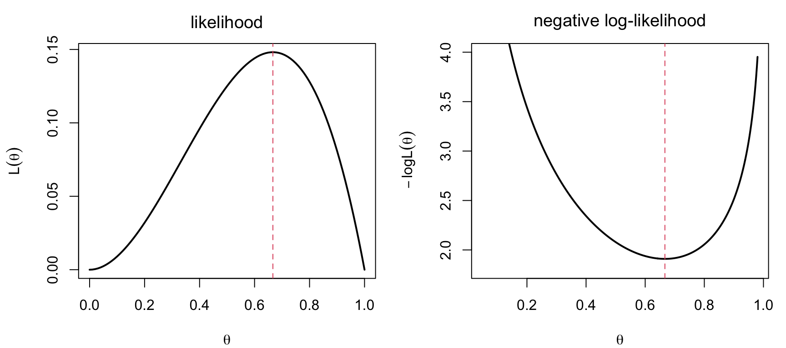
Figure 5.1: Introduces the likelihood and the negative log-likelihood with the simplest possible example, showing that the parameter value making the data most probable is the one that minimizes the function every optimizer in this chapter works with. Likelihood and negative log-likelihood of \(\theta\) for three Bernoulli observations \(y = (1,1,0)\): the maximum of \(L\) and the minimum of \(\mathcal{L}\) both sit at \(\hat\theta = \bar y = 2/3\).
5.1.3 Closed Form: the Normal Mean
Let \(X_1, \ldots, X_n\) be iid \(N(\mu, \sigma_0^{2})\) with \(\sigma_0^{2}\) known. Using the identity \(\sum_i (x_i - \mu)^2 = \sum_i (x_i - \overline x)^2 + n(\overline x - \mu)^2\), \[
\mathcal{L}(\mu) = \frac{n}{2}\log\left(2\pi\sigma_0^{2}\right) + \frac{1}{2\sigma_0^{2}}\sum_{i=1}^{n}(x_i - \mu)^{2} = C + \frac{n}{2\sigma_0^{2}}(\mu - \overline x)^{2} .
\]
Every feature of the general theory is visible here in exact form. \(\mathcal{L}\) is an upward parabola, so it has a unique minimum. Its derivative \(g\) is linear, so \(g(\mu) = 0\) is solved in one line. The curvature \(J(\mu) = g'(\mu) = n/\sigma_0^{2}\) does not depend on \(\mu\) or on the data, so observed and expected information coincide, \(J = nI\), and both grow linearly with \(n\): doubling the sample doubles the sharpness of the well and halves the variance of \(\hat\mu\).
Figure 5.2: Relates the three central objects of maximum likelihood, the negative log-likelihood, its gradient, and its curvature, and shows how each changes with sample size. Negative log-likelihood, its gradient \(g\), and its curvature for a normal mean at \(n = 20\) and \(n = 50\): the larger sample gives a sharper well, a steeper \(g\), and larger curvature.
The derivative \(g\) crosses zero exactly where \(\mathcal{L}\) bottoms out, and the larger sample gives a sharper well, a steeper \(g\), and a larger curvature.
5.1.4 Consistency, Asymptotic Normality, and Fisher Information
Under regularity conditions — the support of \(f\) not depending on \(\theta\), the true value interior to the parameter space, and two derivatives passing under the integral sign — the MLE has three properties as \(n \to \infty\), with \(\theta_*\) the true parameter.
Consistency.\(\hat\theta \to \theta_*\) in probability. The reason is that \(\mathcal{L}(\theta)/n\) converges to \(-E_{\theta_*}[\log f(X \mid \theta)]\), which by the information inequality is minimized at \(\theta = \theta_*\): the surface being minimized converges to one whose lowest point is at the truth.
A sketch: expand \(g(\hat\theta) = 0\) about \(\theta_*\) to get \(\hat\theta - \theta_* \approx -g(\theta_*)/g'(\theta_*)\). The numerator is a sum of iid mean-zero terms — this is the step in which \(I(\theta)\) appears as the variance of the score — hence asymptotically normal with variance \(nI(\theta_*)\); the denominator converges to \(nI(\theta_*)\) by the law of large numbers. Dividing gives variance \([nI(\theta_*)]^{-1}\).
Asymptotic efficiency. No consistent estimator has smaller asymptotic variance — the Cramér–Rao bound is attained.
Since \(\theta_*\) is unknown, the variance is estimated by substituting \(\hat\theta\). Two versions are available: the expected information \(nI(\hat\theta)\), which requires the expectation analytically, and the observed information \(J(\hat\theta) = g'(\hat\theta)\), which requires only the curvature that a Newton step already computes. By the law of large numbers \(J(\hat\theta)/n \approx I(\hat\theta)\), and both give \[
\widehat{\mathrm{SE}}(\hat\theta) = J(\hat\theta)^{-1/2} \quad\text{or}\quad \left[nI(\hat\theta)\right]^{-1/2}, \qquad \hat\theta \pm 1.96\,\widehat{\mathrm{SE}}(\hat\theta).
\]
These are asymptotic statements. A flat \(\mathcal{L}\) — small curvature — gives a large standard error, and an \(\mathcal{L}\) that is far from quadratic gives a standard error that should not be trusted at all; the last section of this chapter shows a case of exactly that.
5.1.5 Demonstration: the Cauchy Location Model
The Cauchy density \(f(x \mid \theta) = 1/\{\pi[1 + (x - \theta)^2]\}\) has no closed-form MLE: \[
\mathcal{L}(\theta) = n\log\pi + \sum_{i=1}^{n}\log\left(1 + (x_i - \theta)^{2}\right), \qquad
g(\theta) = -\sum_{i=1}^{n}\frac{2(x_i - \theta)}{1 + (x_i - \theta)^{2}} .
\]
Setting \(g(\theta) = 0\) gives a polynomial equation of degree \(2n - 1\). Plotting \(\mathcal{L}\) for samples of increasing size shows the well sharpening around the truth, which is consistency and growing information in one picture.
Figure 5.3: Shows how the Cauchy location negative log-likelihood, which is harder to minimize than the normal one, concentrates around the true value as the sample size grows. Cauchy negative log-likelihood for samples of increasing size (\(n = 50, 100, 200\)) from a true location \(\theta_* = 20\): the well sharpens around the truth as \(n\) grows.
The variability of the MLE across repeated samples is the sampling distribution the theory describes. Repeating the experiment 50 times at two sample sizes shows the curves clustering more tightly, and their minima concentrating, as \(n\) grows.
Code
nll_curves <-function(n, nrep =50)replicate(nrep, { d <-rcauchy(n, location =20) lc <-sapply(thetas, nll_cauchy_fn, x = d) lc -min(lc) })curves_small <-nll_curves(20)curves_large <-nll_curves(200)par(mfrow =c(1, 2), mar =c(4, 4.5, 2.5, 1))for (obj inlist(list(m = curves_small, n =20), list(m = curves_large, n =200)))matplot(thetas, obj$m, type ="l", lty =1, col =adjustcolor(1, 0.35), ylim =c(0, 10),xlab =TeX(r"($\theta$)"), ylab =TeX(r"($L(\theta) - L(\hat{\theta})$)"),main =TeX(sprintf(r"(sample size $n = %d$)", obj$n)))### sampling distribution of the MLE at the two sample sizesmle_at <-function(m) thetas[apply(m, 2, which.min)]rbind(`n = 20`=c(mean =mean(mle_at(curves_small)), sd =sd(mle_at(curves_small))),`n = 200`=c(mean =mean(mle_at(curves_large)), sd =sd(mle_at(curves_large))))
mean sd
n = 20 20.05930 0.3843737
n = 200 20.01005 0.0920729
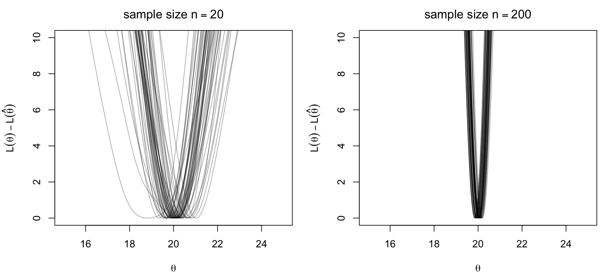
Figure 5.4: Shows the sampling variability of the negative log-likelihood itself: different data sets give different curves, and the minima of those curves, the MLEs, become less variable as \(n\) grows. 50 repeated Cauchy negative log-likelihood curves at \(n = 20\) versus \(n = 200\): the curves cluster more tightly, and their minima concentrate, as \(n\) grows.
The standard deviation falls by roughly the factor \(\sqrt{10}\) predicted by \([nI(\theta_*)]^{-1/2}\). Two features of these curves also warn us about computation: for small \(n\) the negative log-likelihood has several local minima, and its shape away from the well is far from quadratic. Numerical optimization is required, and it must be used with care.
5.2 Univariate Optimization Algorithms
Every algorithm in this section minimizes the negative log-likelihood \[
\mathcal{L}(\theta) = -\ell(\theta),
\] so that the quantity driving each step is its derivative, \[
g(\theta) = \mathcal{L}'(\theta) = -\ell'(\theta),
\] and the quantity measuring curvature is \(g'(\theta) = \mathcal{L}''(\theta) = -\ell''(\theta)\). For iid data \(\mathcal{L}\) is a sum of per-observation terms, \(\mathcal{L}(\theta) = \sum_i \mathcal{L}_i(\theta)\), a decomposition that matters only in the section on stochastic gradients. Maximizing \(\ell\) and minimizing \(-\ell\) are the same problem, but stating it as a minimization matches what optim, nlm and optimize expect, and it is the form the multivariate and gradient-based methods later in the chapter use as well. Note that \(g'\) is exactly the observed information \(J(\theta)\) of the previous section, so the curvature an optimizer computes on its way to the minimum is the same curvature that supplies the standard error.
5.2.1 The Running Example: Zero-Truncated Poisson Counts
All the methods below are illustrated on one model, so that their pictures and their iterate sequences can be compared directly.
Counts are often recorded only when positive: a study of hospital stays sees admitted patients, a survey of litters sees litters that exist. If \(Y \sim \mathrm{Poisson}(\lambda)\) and we observe \(X = Y \mid Y > 0\), \[
P(x \mid \lambda) = \frac{e^{-\lambda}\lambda^{x}}{x!}\cdot\frac{1}{1 - e^{-\lambda}}, \qquad x = 1, 2, \ldots.
\]
Dropping the factorial terms, which do not involve \(\lambda\), and dividing by \(n\) gives the negative log-likelihood per observation, \[
\mathcal{L}(\lambda) = -\overline x \log\lambda + \lambda + \log\left(1 - e^{-\lambda}\right),
\] whose derivatives are, \[
g(\lambda) = -\ell'(\lambda) = -\frac{\overline x}{\lambda} + \frac{1}{1 - e^{-\lambda}}, \qquad
g'(\lambda) = -\ell''(\lambda) = \frac{\overline x}{\lambda^{2}} - \frac{e^{-\lambda}}{\left(1 - e^{-\lambda}\right)^{2}} .
\]
Two features of this model make it a convenient running example. First, the data enter only through the sample mean \(\overline x\), so the total negative log-likelihood is exactly \(n\) times the per-observation one and the two have the same minimizer; the figures below therefore plot the per-observation version, which does not grow with \(n\), while the standard error at the end uses the total. Second, since \(E(X) = \lambda/(1 - e^{-\lambda})\), substituting \(E(X)\) for \(\overline x\) in \(g'\) gives the expected information per observation in closed form, \[
I(\lambda) = \frac{1}{\lambda\left(1 - e^{-\lambda}\right)} - \frac{e^{-\lambda}}{\left(1 - e^{-\lambda}\right)^{2}} ,
\] which is what Fisher scoring needs. The equation \(g(\lambda) = 0\) has no closed-form root, but \(\mathcal{L}\) is unimodal — an ideal problem on which to compare all the methods against a single known answer.
Code
set.seed(2024) # the same data underlies every figure in this section## Negative log-likelihood per observation and its derivatives: nll is L(lambda),## g is the gradient L'(lambda), dg is the curvature L''(lambda). The data enter## only through xbar, so the total L is length(xp) times these.nll <-function(l, xb = xbar) -xb *log(l) + l +log(1-exp(-l)) # L(lambda)g <-function(l, xb = xbar) -xb / l +1/ (1-exp(-l)) # gradient L'dg <-function(l, xb = xbar) xb / l^2-exp(-l) / (1-exp(-l))^2# curvature L''## expected information per observation, and the fixed-point map used belowinfo <-function(l) 1/ (l * (1-exp(-l))) -exp(-l) / (1-exp(-l))^2fp_map <-function(l, xb = xbar) xb * (1-exp(-l))## simulated data: Poisson counts with the zeros discardedx <-rpois(100, lambda =1.5)xp <- x[x >0]xbar <-mean(xp)lhat <-uniroot(g, c(0.2, 20))$root # the answer every method must findc(n_observed =length(xp), sample_mean = xbar, true_lambda =1.5, mle = lhat)
Figure 5.5: Sets up the running example of a zero-truncated Poisson model by showing the negative log-likelihood that every method in this section minimizes, together with its gradient, whose root is the minimizer. Negative log-likelihood per observation and its gradient \(g(\lambda)\) for the zero-truncated Poisson model: the minimum of \(\mathcal{L}\) sits exactly where \(g\) crosses zero.
The minimum of \(\mathcal{L}\) and the zero crossing of \(g\) are the same point, \(\hat\lambda \approx 1.454\). Since \(g\) is increasing through that crossing — the mirror image of the decreasing score \(\ell' = -g\) — the curvature \(g'(\hat\lambda)\) is positive, as it must be at a minimum.
5.2.2 Three Equivalent Formulations
The same task can be posed three ways, and the algorithms below attack different versions of it:
minimize \(\mathcal{L}(\theta) = -\ell(\theta)\) directly, using function values only;
find a root of \(g(\theta) = -\ell'(\theta)\);
rearrange that root equation into a fixed point \(\theta = \varphi(\theta)\).
Root-finders are usually faster because they use derivative information, but they locate any stationary point, including maxima and saddle points. Direct minimizers need only function values and always move downhill, but converge more slowly. Which to prefer depends on whether derivatives are available and whether the function is smooth.
Each method below is illustrated with a schematic showing its first few iterations on the truncated-Poisson nll just defined. The minimizer \(\hat\lambda\) is marked in every figure.
5.2.3 Fixed-Point (Simple) Iteration
Rearrange the stationarity equation \(g(\theta) = -\ell'(\theta) = 0\) algebraically into the form \(\theta = \varphi(\theta)\) and iterate \(\theta_{k+1} = \varphi(\theta_k)\). For the truncated Poisson, \(-\overline x/\lambda + 1/(1 - e^{-\lambda}) = 0\) rearranges to \[
\lambda = \overline x\left(1 - e^{-\lambda}\right) = \varphi(\lambda), \qquad \varphi'(\lambda) = \overline x e^{-\lambda}.
\]
If \(\varphi\) maps an interval into itself and \(\lvert\varphi'(\theta^{*})\rvert < 1\) at the fixed point, the mean value theorem gives \[
\lvert\theta_{k+1} - \theta^{*}\rvert = \lvert\varphi(\theta_k) - \varphi(\theta^{*})\rvert \le \lvert\varphi'(\xi)\rvert \lvert\theta_k - \theta^{*}\rvert ,
\] so the error contracts by roughly the constant factor \(\lvert\varphi'(\theta^{*})\rvert\) at each step. This is linear convergence: a fixed number of digits is gained per iteration, and the closer \(|g'|\) is to 1 the slower the progress.
The mechanism is easiest to see as a cobweb: from \(\lambda_k\) on the diagonal, move vertically to the curve \(\varphi\) to obtain \(\lambda_{k+1}\), then horizontally back to the diagonal to start the next step. The iterates walk toward the intersection of \(g\) with the \(45^{\circ}\) line, and the shallower \(\varphi\) is at that crossing — the smaller \(\lvert\varphi'\rvert\) — the larger each stride toward it.
Code
par(mar =c(4, 4.5, 2.5, 1))plot(lam, fp_map(lam), type ="l", lwd =2, xlim =c(0.3, 3), ylim =c(0.3, 3),xlab =TeX(r"($\lambda_k$)"), ylab =TeX(r"($\varphi(\lambda_k) = \lambda_{k+1}$)"),main =TeX(r"(fixed-point iteration: the cobweb)"))abline(0, 1, lty =2)x0 <-2.8for (k in1:5) { x1 <-fp_map(x0)segments(x0, x0, x0, x1, col =2, lwd =2) # up or down to the curvesegments(x0, x1, x1, x1, col =2, lwd =2) # across to the diagonalpoints(x0, x1, pch =19, col =2, cex =0.7)if (k <=3) text(x0, 0.35, TeX(sprintf(r"($\lambda_%d$)", k -1)), col =2, cex =0.9) x0 <- x1}points(lhat, lhat, pch =19, cex =1.2)text(lhat, lhat, TeX(r"($\hat{\lambda}$)"), pos =2, offset =0.6)
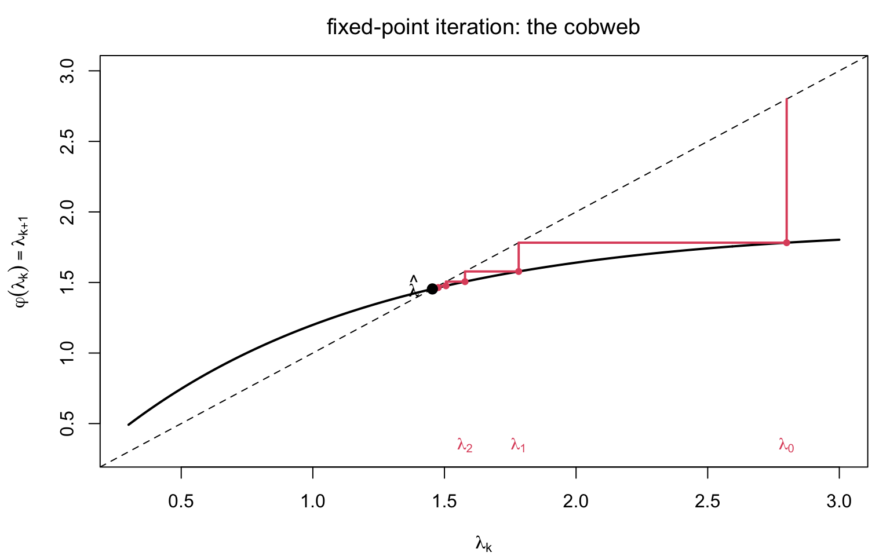
Figure 5.6: Illustrates fixed-point iteration, the simplest scheme for solving the stationarity equation, and how its iterates converge to the solution. Fixed-point iteration as a cobweb diagram: iterates walk toward the intersection of \(\varphi\) with the diagonal.
The method needs no derivatives, but the rearrangement must be found by hand, and different rearrangements of the same equation can converge at different speeds or diverge outright. Geometrically, a rearrangement with \(\lvert\varphi'\rvert > 1\) at the crossing produces a cobweb that spirals outward instead of inward.
5.2.4 Bisection
If \(g\) is continuous and \(g(a)\) and \(g(b)\) have opposite signs, a root lies in \([a, b]\). Evaluate \(g\) at the midpoint and retain whichever half still changes sign. For the truncated Poisson \(-\ell'\) is negative at small \(\lambda\) and positive at large \(\lambda\), so any bracket straddling \(\hat\lambda\) works.
Code
bisection <-function(d1, a, b, tol =1e-10) { # d1 is nll'if (d1(a) *d1(b) >0) stop("endpoints do not bracket a root") k <-0while (b - a > tol) { m <- (a + b) /2if (d1(a) *d1(m) <=0) b <- m else a <- m k <- k +1 }c(root = (a + b) /2, iter = k)}
The schematic below draws the bracket at each iteration as a bar beneath the curve of \(g\). The dot is the midpoint, and the dotted line carries it up to the curve, where its sign decides which half survives.
Code
par(mar =c(4, 4.5, 2.5, 1))plot(lam, g(lam), type ="l", lwd =2, ylim =c(-4.0, 0.9), xlim =c(0.12, 3),xlab =TeX(r"($\lambda$)"), ylab =TeX(r"($g(\lambda)$)"),main =TeX(r"(bisection: each step halves the bracket)"))abline(h =0, lty =3)points(lhat, 0, pch =19, cex =1.2)a <-0.3; b <-3ylev <-seq(-2.9, -3.8, length.out =4)for (k in1:4) { m <- (a + b) /2segments(a, ylev[k], b, ylev[k], col =4, lwd =3)points(c(a, b), rep(ylev[k], 2), pch ="|", col =4)segments(m, ylev[k], m, g(m), lty =3, col =2)points(m, ylev[k], pch =19, col =2, cex =0.8)text(0.19, ylev[k], k, cex =0.8, col =4)if (g(a) *g(m) <=0) b <- m else a <- m}
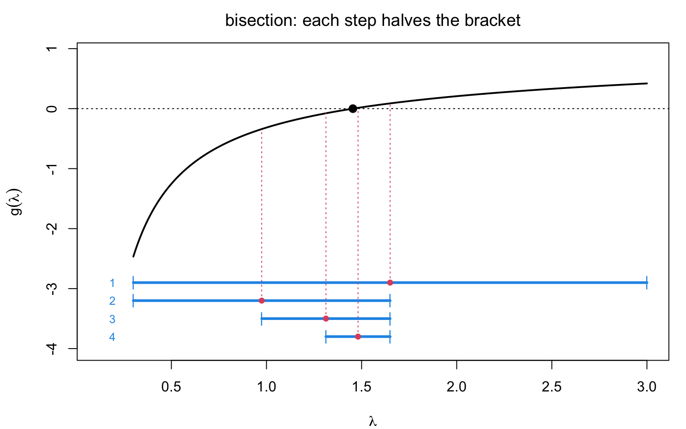
Figure 5.7: Illustrates bisection, a slow but robust root-finding scheme that only needs an interval known to contain the root. Bisection on the gradient \(g\) of the negative log-likelihood: each iteration halves the bracket that contains the root.
The bracket halves at every step, so after \(k\) iterations the error is at most \((b - a)/2^{k}\) and the iteration count is known in advance: about \(\log_2\{(b-a)/\text{tol}\}\), regardless of the shape of \(g\). Bisection cannot diverge, which makes it the natural fallback when a faster method misbehaves. R’s uniroot uses Brent’s method, which retains the bracketing guarantee while interpolating for speed.
5.2.5 Golden Section Search
Golden section minimizes \(\mathcal{L}\) directly, using no derivative at all, which makes it the method of choice when \(\ell\) is not differentiable or its derivative is unreliable. Keep a bracket \([x_l, x_u]\) containing the minimum of a unimodal \(\mathcal{L}\), with two interior points placed at the golden fraction \(\kappa = (3 - \sqrt5)/2 \approx 0.382\) of the way in from each end. Comparing the two interior values discards one end, and the ratio is chosen precisely so that the surviving interior point is correctly positioned for the next iteration: one new evaluation per step, with the bracket shrinking by the factor \(0.618\).
Code
golden <-function(f, brack.int, eps =1e-4, ...) { kap <- (3-sqrt(5)) /2 xl <-min(brack.int); xu <-max(brack.int) tmp <- kap * (xu - xl) xmu <- xu - tmp; xml <- xl + tmp fl <-f(xml, ...); fu <-f(xmu, ...)while (abs(xu - xl) > (1e-5+abs(xl)) * eps) {if (fl < fu) { xu <- xmu; xmu <- xml; fu <- fl xml <- xl + kap * (xu - xl); fl <-f(xml, ...) } else { xl <- xml; xml <- xmu; fl <- fu xmu <- xu - kap * (xu - xl); fu <-f(xmu, ...) } }if (fl < fu) xml else xmu}
The schematic makes the reuse visible. Each bar is the current bracket with its two interior points; the point that survives into the next iteration is drawn in blue and sits at exactly the right position there, so only the red point has to be evaluated afresh.
Code
kap <- (3-sqrt(5)) /2par(mar =c(4, 4.5, 2.5, 1))plot(lam, nll(lam), type ="l", lwd =2, ylim =c(0.30, 1.30), xlim =c(0.12, 3),xlab =TeX(r"($\lambda$)"), ylab =TeX(r"($L(\lambda)$)"),main =TeX(r"(golden section: one new evaluation per step)"))points(lhat, nll(lhat), pch =19, cex =1.2)xl <-0.3; xu <-3ylev <-seq(0.42, 0.34, length.out =3)for (k in1:3) { xml <- xl + kap * (xu - xl); xmu <- xu - kap * (xu - xl)segments(xl, ylev[k], xu, ylev[k], col =4, lwd =3)points(c(xl, xu), rep(ylev[k], 2), pch ="|", col =4) keep_lower <-nll(xml) <nll(xmu)points(xml, ylev[k], pch =19, cex =0.9, col =if (keep_lower) 4else2)points(xmu, ylev[k], pch =19, cex =0.9, col =if (keep_lower) 2else4)text(0.19, ylev[k], k, cex =0.8, col =4)if (keep_lower) xu <- xmu else xl <- xml}
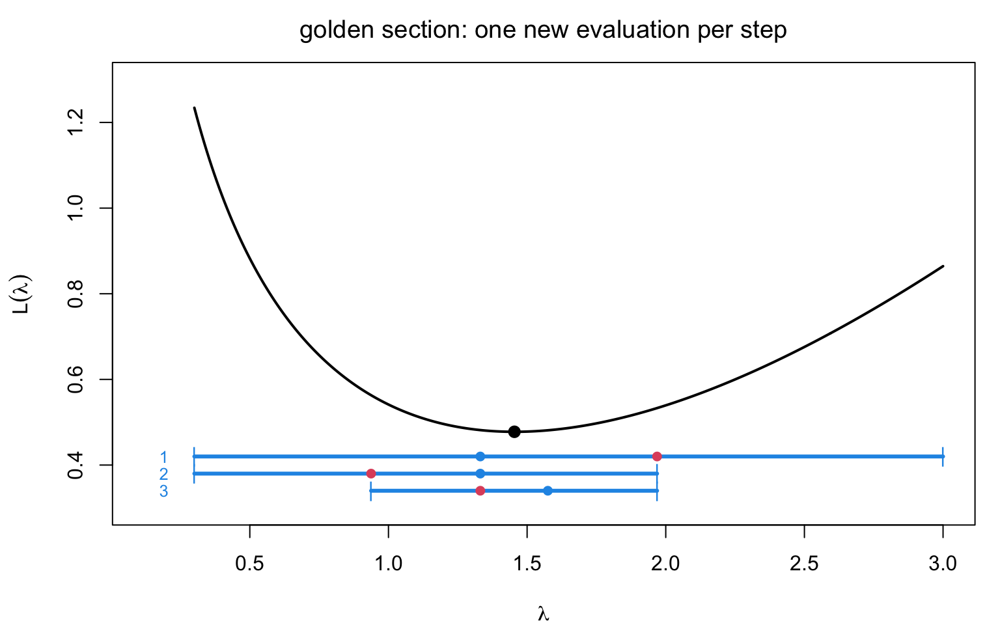
Figure 5.8: Illustrates golden section search, a derivative-free method for optimizing a one-dimensional function, and why it needs only one new function evaluation per step. Golden section search: the interior point that survives (blue) is already correctly positioned for the next iteration, so only one new point (red) is evaluated per step.
The first test is the negative log-likelihood of the classical genetic linkage model, with cell counts \((1997, 906, 904, 32)\) and probabilities \(\left((2+\theta)/4, (1-\theta)/4, (1-\theta)/4, \theta/4\right)\); it is smooth, so any method would work. The second, \(f(x) = |x - 10|\), is not differentiable at its minimum, so no root-finder applies — golden section handles it without modification.
Code
f1 <-function(theta) -1997*log(2+ theta) -1810*log(1- theta) -32*log(theta)f2 <-function(x) abs(x -10)par(mfrow =c(1, 2), mar =c(4, 4.5, 2.5, 1))curve(f1, 0.001, 0.999, n =400, lwd =2, xlab =TeX(r"($\theta$)"), ylab =TeX(r"($L(\theta)$)"),main =TeX(r"(genetic linkage model)"))abline(v =golden(f1, c(0.001, 0.999)), col =2, lty =2, lwd =2)curve(f2, 0, 20, n =400, lwd =2, xlab =TeX(r"($x$)"), ylab =TeX(r"($|x - 10|$)"),main =TeX(r"(not differentiable at the minimum)"))abline(v =golden(f2, c(0, 20)), col =2, lty =2, lwd =2)c(linkage =golden(f1, c(0.001, 0.999)), abs_value =golden(f2, c(0, 20)))
linkage abs_value
0.03571247 10.00009645
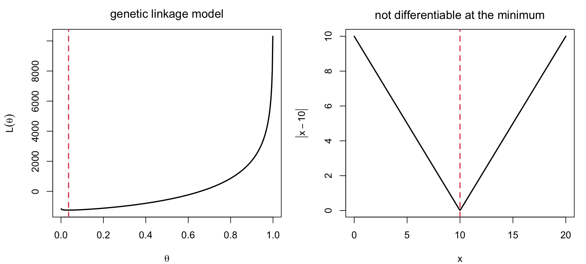
Figure 5.9: Tests golden section search on a smooth likelihood and on a non-differentiable function to show that the method needs no derivatives. Golden section search applied to a smooth genetic-linkage log-likelihood (left) and to a non-differentiable function \(|x-10|\) (right), with the located minimizer marked in red.
5.2.6 Newton–Raphson
5.2.6.1 Derivation
Approximate \(g\) by its tangent line at \(\theta_k\) and solve for where the tangent crosses zero: \[
g(\theta) \approx g(\theta_k) + g'(\theta_k)(\theta - \theta_k) = 0
\implies \theta_{k+1} = \theta_k - \frac{g(\theta_k)}{g'(\theta_k)}
= \theta_k - \frac{-\ell'(\theta_k)}{-\ell''(\theta_k)} .
\]
The two minus signs cancel, so this is numerically the same step a score-based derivation would give; writing it this way keeps the whole section in minimization form. Equivalently, replace \(\mathcal{L}\) by its second-order Taylor expansion at \(\theta_k\) and jump to the minimum of that parabola. For an exactly quadratic \(\mathcal{L}(\theta) = a(\theta - u)^2 + C\) with \(a > 0\) we have \(g = 2a(\theta - u)\) and \(g' = 2a\), so \[
\theta_{k+1} = \theta_k - \frac{2a(\theta_k - u)}{2a} = u,
\] in one step from any starting value. The normal-mean example of the previous section is exactly of this form: Newton converges immediately.
The left panel below traces three steps. At each iterate, the tangent to \(g\) is followed to the horizontal axis, and where it lands is the next iterate. As the curve straightens near the root, the tangent becomes an excellent approximation and the steps land almost exactly on the answer.
The right panel contrasts one Newton step with one step of the method of scoring from the same point. Newton uses the actual slope \(g'(\lambda_k)\), the observed information; scoring uses \(I(\lambda_k)\), the same curvature averaged over hypothetical datasets. The two lines differ away from the root and coincide as \(\lambda_k\) approaches it.
Code
par(mfrow =c(1, 2), mar =c(4, 4.5, 2.5, 1))### three Newton stepsplot(lam, g(lam), type ="l", lwd =2, ylim =c(-2.6, 0.9),xlab =TeX(r"($\lambda$)"), ylab =TeX(r"($g(\lambda)$)"),main =TeX(r"(Newton-Raphson: follow the tangent)"))abline(h =0, lty =3)points(lhat, 0, pch =19, cex =1.2)x0 <-0.45for (k in1:3) { x1 <- x0 -g(x0) /dg(x0)segments(x0, g(x0), x1, 0, col =2, lwd =2)segments(x1, 0, x1, g(x1), lty =3, col ="grey40")points(c(x0, x1), c(g(x0), 0), pch =19, col =2, cex =0.7)text(x0, g(x0), TeX(sprintf(r"($\lambda_%d$)", k -1)),pos =if (k ==1) 4else1, col =2, cex =0.9) x0 <- x1}## Newton step versus scoring step from the same pointplot(lam, g(lam), type ="l", lwd =2, ylim =c(-2.6, 0.9),xlab =TeX(r"($\lambda$)"), ylab =TeX(r"($g(\lambda)$)"),main =TeX(r"(observed versus expected curvature)"))abline(h =0, lty =3)points(lhat, 0, pch =19, cex =1.2)x0 <-0.45x_nr <- x0 -g(x0) /dg(x0) # slope nll''(lambda) = -l''(lambda)x_fs <- x0 -g(x0) /info(x0) # slope I(lambda)segments(x0, g(x0), x_nr, 0, col =2, lwd =2)segments(x0, g(x0), x_fs, 0, col =4, lwd =2, lty =5)points(c(x0, x_nr, x_fs), c(g(x0), 0, 0), pch =19, cex =0.7, col =c(1, 2, 4))legend("bottomright", bty ="n", lwd =2, lty =c(1, 5), col =c(2, 4),legend =TeX(c(r"(Newton: slope $g'(\lambda_k)$)", r"(scoring: slope $I(\lambda_k)$)")))
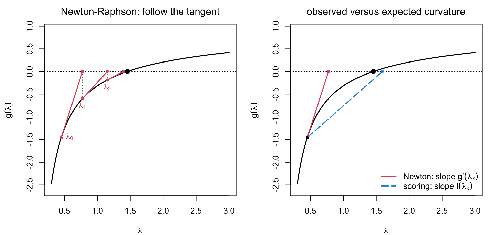
Figure 5.10: Illustrates Newton-Raphson, which replaces the gradient of the negative log-likelihood by its tangent line at each step, and contrasts it with Fisher scoring, which uses the expected rather than the observed curvature. Newton-Raphson following the tangent to \(-\ell'\) (left), and one Newton step compared with one Fisher-scoring step from the same point (right).
The error is squared at each step, so the number of correct digits roughly doubles. Two conditions appear in the constant: \(g'(\hat\theta) \ne 0\), meaning the minimum is a genuine bowl and not a flat spot, and \(g''\) bounded near the root. Asymptotic normality says that negative log-likelihoods are approximately quadratic near the MLE, which is why Newton is so effective there.
5.2.8 A Classic Illustration: Newton’s Method for \(\sqrt{a}\)
Derivation. To find \(\sqrt{a}\), take \(f(x) = x^2 - a\), whose positive root is \(\sqrt a\). Then \(f'(x) = 2x\), and the Newton step is, \[
x_{k+1} = x_k - \frac{f(x_k)}{f'(x_k)} = x_k - \frac{x_k^{2} - a}{2x_k} = \frac{1}{2}\left(x_k + \frac{a}{x_k}\right).
\]
The final form is the Babylonian rule: if \(x_k\) is too small then \(a/x_k\) is too large, and the root lies between them, so average the pair. Newton’s tangent line lands exactly on the midpoint.
The error follows the general quadratic law. Writing \(e_k = x_k - \sqrt a\), \[
e_{k+1} = \frac{1}{2}\left(x_k + \frac{a}{x_k}\right) - \sqrt a = \frac{\left(x_k - \sqrt a\right)^{2}}{2x_k} = \frac{e_k^{2}}{2x_k},
\]
so the number of correct digits roughly doubles each step.
sqrt(10) sqrt(20) sqrt(50)
iter 0 1.00000000000 1.00000000000 1.00000000000
iter 1 5.50000000000 10.50000000000 25.50000000000
iter 2 3.65909090909 6.20238095238 13.73039215686
iter 3 3.19600508187 4.71347454529 8.68597437190
iter 4 3.16245562280 4.47831444547 7.22119047433
iter 5 3.16227766518 4.47214021707 7.07262827574
iter 6 3.16227766017 4.47213595500 7.07106798401
Code
sqrt(c(10, 20, 50)) # for comparison
[1] 3.162278 4.472136 7.071068
Code
signif(abs(traces -rep(sqrt(c(10, 20, 50)), each =7)), 3) # errors
sqrt(10) sqrt(20) sqrt(50)
iter 0 2.16e+00 3.47e+00 6.07e+00
iter 1 2.34e+00 6.03e+00 1.84e+01
iter 2 4.97e-01 1.73e+00 6.66e+00
iter 3 3.37e-02 2.41e-01 1.61e+00
iter 4 1.78e-04 6.18e-03 1.50e-01
iter 5 5.01e-09 4.26e-06 1.56e-03
iter 6 4.44e-16 2.03e-12 1.72e-07
Starting from \(x_0 = 1\) in every case, the first two steps do the coarse work — the larger \(a\) is, the further the opening leap — and from the third step on the error squares: roughly \(10^{-1}\), then \(10^{-3}\), then \(10^{-6}\), then machine precision. Six iterations suffice for all three, though \(\sqrt{50}\) spends one more step than \(\sqrt{10}\) recovering from the poor start.
5.2.9 Problem: divergence
Newton uses only local information, so the quadratic model can be badly wrong away from the maximum. Three failures occur:
wrong curvature — where \(g' < 0\) the local model is an upside-down bowl, and the step heads toward a maximum or off to infinity;
overshooting — where \(g\) is nearly flat, \(g'(\theta_k) \approx 0\) produces an enormous step, possibly outside the parameter space;
multiple roots — the iteration converges to whichever stationary point it happens to reach, which need not be the global minimum.
The single-observation Cauchy likelihood is the standard illustration. With one observation at zero, \(\mathcal{L}(\theta) = -\ell(\theta) = \log(1 + \theta^{2})\) and \(g(\theta) = -\ell'(\theta) = 2\theta/(1 + \theta^{2})\), whose only root is \(\theta = 0\). That derivative rises, turns over at \(\theta = 1\), and decays to zero in the tails — exactly the flat region that defeats Newton.
Code
nll_c <-function(t) log(1+ t^2) # negative log-likelihoodg_c <-function(t) 2* t / (1+ t^2) # gradient L'(theta)dg_c <-function(t) 2* (1- t^2) / (1+ t^2)^2# curvature L''(theta)par(mfrow =c(1, 2), mar =c(4, 4.5, 2.5, 1))curve(nll_c, -5, 5, n =400, lwd =2, xlab =TeX(r"($\theta$)"), ylab =TeX(r"($L(\theta)$)"),main =TeX(r"(negative log-likelihood)"))curve(g_c, -5, 5, n =400, lwd =2, xlab =TeX(r"($\theta$)"), ylab =TeX(r"($g(\theta)$)"),main =TeX(r"(gradient, with the flat tails)"))abline(h =0, lty =3); abline(v =c(-1, 1), col =2, lty =2)
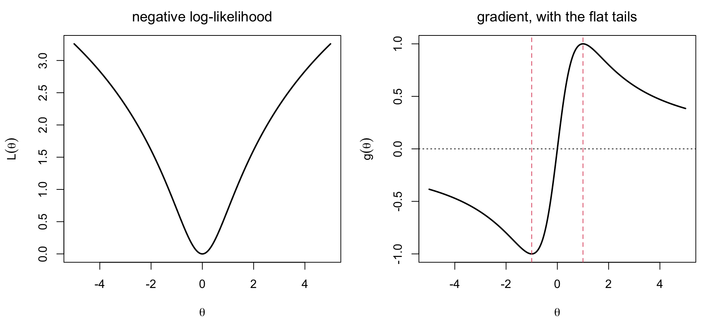
Figure 5.11: Explains why Newton-Raphson can fail on the Cauchy likelihood by showing the shape of the contribution of a single observation. Single-observation Cauchy negative log-likelihood and its gradient: the gradient flattens in the tails, the region that defeats Newton-Raphson.
Tracing the iterates from three starting values shows the boundary at \(\lvert\theta_0\rvert = 1\), where \(g\) turns over:
start = 0.5 start = 0.8 start = 1.2
iter 0 5.0000e-01 0.8000 1.2000
iter 1 -3.3333e-01 -2.8444 7.8545
iter 2 8.3333e-02 -6.4912 15.9680
iter 3 -1.1655e-03 -13.2980 32.0620
iter 4 3.1664e-09 -26.7470 64.1860
iter 5 0.0000e+00 -53.5690 128.4000
iter 6 0.0000e+00 -107.1800 256.8200
iter 7 0.0000e+00 -214.3700 513.6500
iter 8 0.0000e+00 -428.7500 1027.3000
From \(\theta_0 = 0.5\), inside the region where the quadratic model is adequate, Newton converges quadratically to zero. From \(\theta_0 = 0.8\) the first step already overshoots into the tail, and from \(\theta_0 = 1.2\) — beyond the inflection point of \(-\ell'\) — the iterates run away, each step landing further out where the derivative is flatter still.
Code
## Interactive versions of the same three trajectories (requires the animation## package and a graphics device that can write animations)library(animation)ani.options(interval =1, nmax =50)newton.method(FUN = g_c, init =0.5, rg =c(-1.5, 1.5))newton.method(FUN = g_c, init =0.8, rg =c(-8, 1.5))newton.method(FUN = g_c, init =1.2, rg =c(-2, 20))
5.2.9.1 Shinylive App for Newton-Raphson on the Cauchy Likelihood
There is a shinylive app to show how the Newton-Raphson step diverges on the Cauchy likelihood from a starting value chosen by clicking, and how step halving and a robustified Hessian each repair it.
5.2.10 Univariate Fisher Scoring
Newton’s step divides by the observed curvature \(g'(\theta_k) = -\ell''(\theta_k)\), computed from the data at hand, which can be negative — or nearly zero — far from the minimum. Replacing it by the expected curvature \(nI(\theta_k)\) gives the method of scoring: \[
\theta_{k+1} = \theta_k - \frac{g(\theta_k)}{nI(\theta_k)}
= \theta_k + \frac{\ell'(\theta_k)}{nI(\theta_k)} .
\]
Because \(nI(\theta) > 0\) for every \(\theta\) by construction, the denominator never changes sign: every step of scoring is a descent step on \(\mathcal{L}\), even at a point where Newton’s step would point uphill or blow up. Near the minimum \(nI(\hat\theta) \approx g'(\hat\theta)\), so scoring and Newton coincide and both converge quickly; the two methods differ only in how they behave away from the root.
Code
fisher_scoring <-function(d1, nI, x0, tol =1e-10, maxit =100) {for (k in1:maxit) { # d1 = nll', nI = expected info x1 <- x0 -d1(x0) /nI(x0)if (abs(x1 - x0) < tol) return(c(root = x1, iter = k)) x0 <- x1 }stop("not converged")}## a poor start: at lambda = 3.5 the curvature nll'' is nearly flatc(newton_step_from_3.5 =3.5-g(3.5) /dg(3.5)) # overshoots to an infeasible negative lambda
From this poor start, Newton’s step lands on a negative — and hence infeasible — value of \(\lambda\) and never recovers, while scoring’s positive denominator lands its very first step near \(\lambda \approx 1.64\), already close to the root, and converges normally from there. The price of that safety is that \(nI(\theta)\) must be available in closed form; where it is not, Newton with the safeguards below is the fallback.
5.2.11 Safeguards
Three remedies cover most cases. Start from a robust estimate — the sample median for a location model. Apply step halving: accept the full Newton step only if it decreases \(\mathcal{L}\), otherwise halve it until it does. Or replace the observed curvature by the expected information, giving the method of scoring, \[
\theta_{k+1} = \theta_k - \frac{g(\theta_k)}{n I(\theta_k)} ,
\] in which the divisor is positive by construction, so every step descends. Near the MLE \(nI(\hat\theta) \approx g'(\hat\theta)\), so scoring inherits Newton’s speed while being far more stable away from the optimum. Its cost is that the expectation must be available in closed form.
When \(g\) or \(g'\) is tedious or error-prone to derive by hand, both can be approximated by finite differences: \[
g(\theta) \approx \frac{\mathcal{L}(\theta + h) - \mathcal{L}(\theta - h)}{2h}, \qquad
g'(\theta) \approx \frac{\mathcal{L}(\theta + h) - 2\,\mathcal{L}(\theta) + \mathcal{L}(\theta - h)}{h^{2}}.
\]
The step \(h\) trades off two sources of error: too large and the approximation suffers truncation error from the curvature of \(\mathcal{L}\) itself; too small and it suffers rounding error, because the numerator subtracts two nearly equal floating-point numbers. A step of \(h \approx \sqrt{\varepsilon}\,(1 + \lvert\theta\rvert) \approx 10^{-8}\) balances the two for the first derivative, and \(h \approx \varepsilon^{1/3}\) for the second, where \(\varepsilon \approx 2 \times 10^{-16}\) is double-precision machine epsilon.
The two agree to several digits, which is reassuring but also the point: nlm() and optim(method = "BFGS") fall back on exactly this kind of finite differencing whenever an analytic gradient is not supplied, and numDeriv::grad() / numDeriv::hessian() implement more accurate variants (Richardson extrapolation) for when a single finite difference is not precise enough.
5.2.13 Summary of the Methods
method
needs
convergence
fails when
fixed point
a rearrangement \(\theta = \varphi(\theta)\)
linear, factor \(\lvert \varphi'\rvert\)
\(\lvert \varphi'\rvert \ge 1\)
bisection
\(g\) and a sign-changing bracket
linear, factor \(1/2\)
no bracket available
Newton–Raphson
\(g\) and \(g'\)
quadratic near the root
flat or wrong curvature
method of scoring
\(g\) and \(I(\theta)\)
linear to quadratic
\(E[\cdot]\) unavailable
golden section
\(\mathcal{L}\) only, and a bracket
linear, factor \(0.618\)
\(\mathcal{L}\) not unimodal
5.2.14 Putting the Methods Together on the Truncated Poisson
Each method above was drawn on this model one step at a time. Running them to convergence side by side shows how the iterate sequences themselves differ.
5.2.14.1 The Three Iterations
Each method below returns the whole sequence of iterates together with the value of \(\mathcal{L}\) attained, so the trajectories can be compared directly. All three use the nll, g, dg and info — that is, \(\mathcal{L}\), \(g\), \(g'\) and \(I\) — defined at the start of this section, with simple iteration using the rearrangement \(\lambda = \overline x(1 - e^{-\lambda}) = \varphi(\lambda)\) derived earlier.
Code
## Each returns the iterate sequence together with the nll attained.iterate_path <-function(step, n_iter, lambda0) { lambda <-numeric(n_iter +1); lambda[1] <- lambda0for (i in1:n_iter) lambda[i +1] <-step(lambda[i])data.frame(lambda = lambda, nll =nll(lambda))}nzp.simple.iteration <-function(n_iter, lambda0)iterate_path(function(l) fp_map(l), n_iter, lambda0)nzp.newton.raphson <-function(n_iter, lambda0)iterate_path(function(l) l -g(l) /dg(l), n_iter, lambda0)nzp.method.of.scoring <-function(n_iter, lambda0)iterate_path(function(l) l -g(l) /info(l), n_iter, lambda0)
5.2.14.2 Comparison From Several Starting Values
The three methods are run for 15 iterations from a sensible start, a start far below, and a start far above.
### first six iterates from each starting valuefor (m innames(paths)) {cat("\n", m, "\n") tab <- paths[[m]][1:6, ]dimnames(tab) <-list(paste("iter", 0:5), sprintf("start = %.4g", starts))print(signif(tab, 6))}
simple
start = 1.897 start = 0.1 start = 100
iter 0 1.89744 0.100000 100.00000
iter 1 1.61291 0.180565 1.89744
iter 2 1.51926 0.313459 1.61291
iter 3 1.48214 0.510573 1.51926
iter 4 1.46643 0.758687 1.48214
iter 5 1.45961 1.008900 1.46643
newton
start = 1.897 start = 0.1 start = 100
iter 0 1.89744 0.100000 100.00
iter 1 1.34531 0.194248 -5070.27
iter 2 1.44706 0.366193 NaN
iter 3 1.45420 0.649619 NaN
iter 4 1.45423 1.024460 NaN
iter 5 1.45423 1.337120 NaN
scoring
start = 1.897 start = 0.1 start = 100
iter 0 1.89744 0.10000 100.00000
iter 1 1.46976 1.73860 1.89744
iter 2 1.45426 1.46102 1.46976
iter 3 1.45423 1.45424 1.45426
iter 4 1.45423 1.45423 1.45423
iter 5 1.45423 1.45423 1.45423
The pattern is the one the theory predicts. Newton–Raphson takes the fewest iterations from a good start, and its digits lock in from the left as the error is squared each step. Simple iteration converges from every start, including the extreme ones, but slowly and at a steady rate. The method of scoring is intermediate: always descending on \(\mathcal{L}\), and nearly as fast as Newton once close.
Code
err <-sapply(paths, function(p) abs(p[, 1] - lhat)) # from the xbar startpar(mar =c(4, 4.5, 2.5, 1))matplot(0:15, pmax(err, 1e-17), log ="y", type ="b", pch =19, lty =1, col =c(4, 1, 2),xlab =TeX(r"(iteration $k$)"), ylab =TeX(r"($|\lambda_k - \hat{\lambda}|$)"),main =TeX(r"(error decay from $\lambda_0 = \bar{x}$)"))legend("bottomleft", bty ="n", pch =19, lty =1, col =c(4, 1, 2),legend =c("simple iteration", "Newton-Raphson", "method of scoring"))
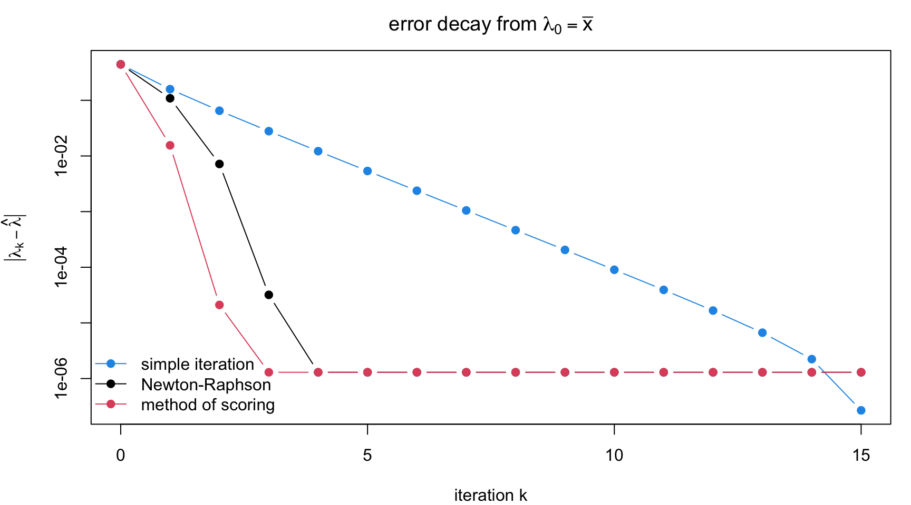
Figure 5.12: Compares the convergence speed of three iterative algorithms on the same problem by showing how quickly each reduces its error. Error decay (log scale) of simple iteration, Newton-Raphson, and the method of scoring for the zero-truncated Poisson MLE: Newton’s error curve bends downward, reflecting quadratic convergence.
On a log scale a linear method is a straight line; Newton’s curve bends downward until it reaches the floor set by machine precision.
newton fixed_point bisection golden uniroot optimize
1.454235 1.454235 1.454235 1.454235 1.454235 1.454235
All six agree, which is the point of running them together: the methods differ in cost and robustness, not in the answer.
5.2.14.3 Standard Error From the Curvature
The optimizer has already produced everything inference needs: the curvature \(g'(\hat\lambda)\) that Newton divided by is the observed information per observation, so the total is \(J(\hat\lambda) = n\,g'(\hat\lambda)\).
lam_se <-seq(lhat -4* se_obs, lhat +4* se_obs, length.out =300)quad <-0.5* n_obs *dg(lhat) * (lam_se - lhat)^2par(mar =c(4, 4.5, 2.5, 1))plot(lam_se, n_obs * (nll(lam_se) -nll(lhat)), type ="l", lwd =2,xlab =TeX(r"($\lambda$)"), ylab =TeX(r"($L(\lambda) - L(\hat{\lambda})$)"),main =TeX(r"(negative log-likelihood and its quadratic approximation at $\hat{\lambda}$)"))lines(lam_se, quad, col =2, lwd =2, lty =2)abline(h =1.92, col =4, lty =3)abline(v = lhat +c(-1.96, 1.96) * se_obs, col =4, lty =3)legend("top", bty ="n", lwd =2, lty =c(1, 2), col =c(1, 2),legend =TeX(c(r"($L(\lambda) - L(\hat{\lambda})$)", r"(quadratic from $J(\hat{\lambda})$)")))
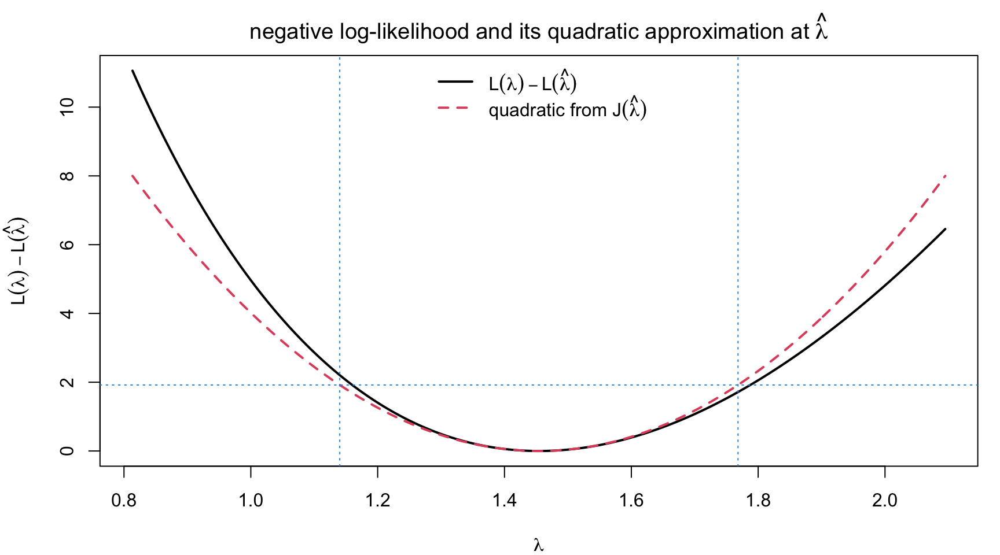
Figure 5.13: Shows how the curvature of the negative log-likelihood at the MLE yields a standard error and a Wald confidence interval, by approximating it with a parabola. Zero-truncated Poisson negative log-likelihood versus its quadratic approximation at \(\hat\lambda\), with the resulting Wald 95% interval marked.
The parabola implied by the observed information tracks the negative log-likelihood closely over the width of the interval, so the Wald interval is trustworthy here.
5.2.14.4 Evaluating the Naive Estimator
All of this machinery is worth the effort only if the MLE beats the easy alternative. The naive estimator ignores the truncation and reports \(\overline x\). Simulating many truncated samples gives the sampling distributions of both estimators.
est <-sim_nzp(1.5)par(mfrow =c(1, 2), mar =c(4, 4.5, 2.5, 1))for (m inc("naive", "mle")) {hist(est[m, ], breaks =25, col ="grey90",xlim =range(est), xlab =TeX(r"($\hat{\lambda}$)"),main =TeX(sprintf(r"(%s, bias $= %.3f$)", m, mean(est[m, ]) -1.5)))abline(v =1.5, col =2, lwd =2, lty =2)}
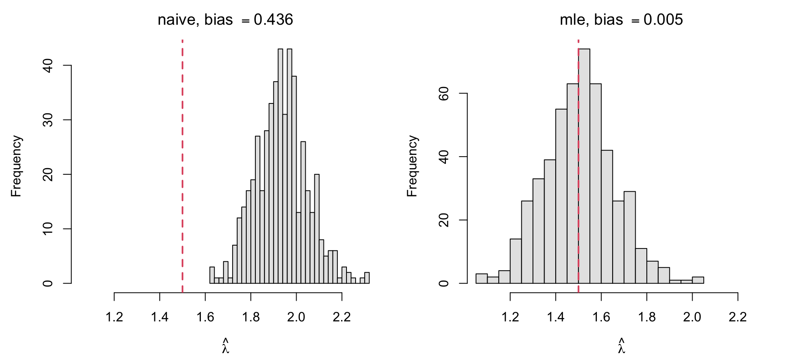
Figure 5.14: Uses simulation to show why the MLE is worth computing: ignoring the truncation gives a biased estimator, whereas the MLE is centred on the truth. Sampling distributions of the naive estimator \(\bar x\) versus the MLE for a zero-truncated Poisson mean, \(\lambda_{true} = 1.5\): the naive estimator is badly biased upward, the MLE is centred on the truth.
The naive estimator is biased upward, and severely so when \(\lambda\) is small, since that is when most of the probability mass sits on the discarded zero. Its bias does not shrink with sample size: it reflects the wrong model, not too little data. The MLE is centred on the truth with a standard deviation matching the information-based standard error of the previous section. The optimization was the means; the correct estimator was the end.
5.3.1 Gradient and Hessian: A Geometric Illustration
The two objects entering the multivariate Newton step have a direct geometric reading. The negative gradient \(-g(\theta)\) is the direction of steepest descent and is perpendicular to the contour of \(\mathcal{L}\) through \(\theta\); the Hessian describes how that direction curves, and at a strict local minimum \(J(\theta) = \nabla g(\theta)\) is positive definite. Near \(\hat\theta\), \(\mathcal{L}\) is well approximated by the quadratic \[
\mathcal{L}(\theta) \approx \mathcal{L}(\hat\theta) + \tfrac12(\theta - \hat\theta)^\top J(\hat\theta)(\theta - \hat\theta),
\] whose contours are ellipses centred at \(\hat\theta\). Writing the eigendecomposition \(J(\hat\theta) = Q\Lambda Q^\top\), the axes of these ellipses point along the eigenvectors in \(Q\), and the half-length along axis \(j\) is proportional to \(1/\sqrt{\lambda_j}\): a large eigenvalue means sharp curvature and a short, well-determined direction, while \(\lambda_{\max}/\lambda_{\min}\) measures how elongated — and, once the axes are tilted, how correlated the parameters are.
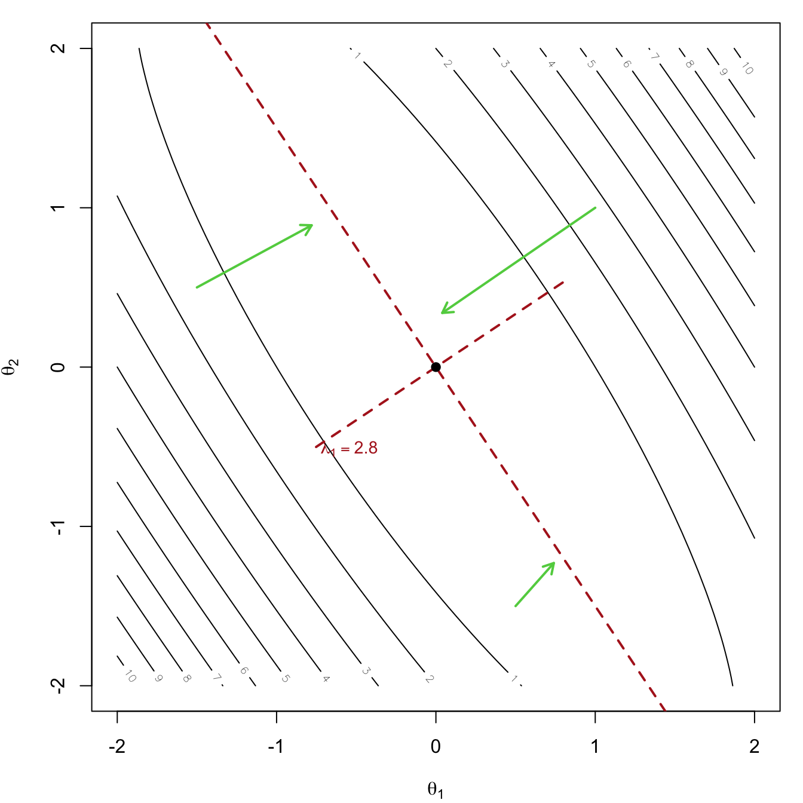
Figure 5.15: Gives a geometric picture of the gradient and the Hessian in two dimensions, explaining why the direction of steepest descent generally does not point at the minimum. Contours of a quadratic negative log-likelihood: steepest-descent arrows (green) run perpendicular to the contours but do not point at the minimum unless the ellipses are circular; the dashed axes are the eigenvectors of \(J(\hat\theta)\), each with half-length \(1/\sqrt{\lambda_j}\).
Every arrow in the figure is perpendicular to the contour it starts on and points generally downhill toward the minimum at the origin, but only an arrow started exactly on a principal axis points straight at it. This is why Newton’s step, which multiplies the gradient by \(J(\hat\theta)^{-1}\) rather than simply following it, converges directly to \(\hat\theta\): it rescales and rotates the descent direction to undo exactly this distortion. The plain gradient-descent methods of a later section have no such correction, and zig-zag across elongated contours like these.
5.3.2 Naive Newton-Raphson Iterations
In the previous section the parameter was a scalar, and the log-likelihood could be inspected by plotting it. Once \(\theta \in \mathbb{R}^p\) neither is true: we cannot see the surface, and the notion of “bracketing a root” that underlies bisection and golden section has no direct multivariate analogue. What survives is the local quadratic approximation, and the Newton–Raphson algorithm is its direct consequence.
This section develops the multivariate Newton–Raphson method and its statistical variant, Fisher scoring, applies both to logistic regression, examines interactively how and why the iteration can diverge, and closes with a survey of the derivative-free and gradient-only alternatives.
Write the log-likelihood as \(\ell(\theta)\) for \(\theta \in \mathbb{R}^p\), and define. \[
g(\theta) = \nabla \mathcal{L}(\theta) = -\frac{\partial \ell(\theta)}{\partial \theta}
\quad (p \times 1, \text{ the gradient}),
\qquad
\nabla g(\theta) = -\frac{\partial^2 \ell(\theta)}{\partial \theta \, \partial \theta^{\top}}
\quad (p \times p, \text{ the Hessian of } \mathcal{L}).
\]
The univariate \(g = \mathcal{L}'\) becomes the gradient \(g = \nabla\mathcal{L}\) with no change of meaning. As before, the Hessian of \(\mathcal{L}\)is the observed information matrix, so we write \(J(\theta) = \nabla g(\theta)\) throughout.
Expand \(\mathcal{L}\) to second order about the current iterate \(\theta^{(k)}\): \[
\mathcal{L}(\theta) \;\approx\; \mathcal{L}(\theta^{(k)})
+ g(\theta^{(k)})^{\top}(\theta - \theta^{(k)})
+ \tfrac{1}{2}\,(\theta - \theta^{(k)})^{\top} J(\theta^{(k)}) \,(\theta - \theta^{(k)}).
\]
This is a quadratic in \(\theta\). If \(J(\theta^{(k)})\) is positive definite the quadratic has a unique minimum, found by setting its derivative to zero: \[
g(\theta^{(k)}) + J(\theta^{(k)})(\theta - \theta^{(k)}) = 0 .
\]
Solving for \(\theta\) gives the Newton–Raphson update: \[
\boxed{\;\theta^{(k+1)} = \theta^{(k)} - J(\theta^{(k)})^{-1} g(\theta^{(k)}) \;}.
\]
The algorithm therefore replaces the negative log-likelihood by the quadratic that matches its value, slope and curvature at the current point, and jumps to the minimum of that quadratic. Everything that follows — the fast convergence, and the modes of failure — comes from how good or bad that replacement is.
Three remarks are worth making explicit.
The inverse is never formed. Write the update as \(\theta^{(k+1)} = \theta^{(k)} + \delta^{(k)}\) where \(\delta^{(k)}\) solves the linear system \(J(\theta^{(k)})\,\delta = -g(\theta^{(k)})\). In R this is solve(J, -g), not solve(J) %*% (-g). The former is faster and numerically more stable; the latter computes \(p^2\) numbers in order to use \(p\) of them.
The step is not the steepest-descent direction.\(\delta^{(k)} = -J^{-1}g\) points along \(-g\) only when \(J\) is a multiple of the identity. The information matrix rescales and rotates the descent direction to account for differing curvature and correlation among the parameters, which is exactly why Newton–Raphson is insensitive to the scaling of the parameters while gradient descent is not.
Positive definiteness is an assumption, not a guarantee. Away from the minimum \(J(\theta^{(k)})\) can be indefinite or singular, in which case the “minimum of the quadratic” is a saddle point or does not exist, and \(\delta^{(k)}\) may point uphill. Section 5.3.6 examines this.
5.3.2.1 Fisher scoring
The observed information \(J(\theta)\) depends on the data. Its expectation under the model, \[
I(\theta) = E_{\theta}\{J(\theta)\} = -E_{\theta}\left\{ \frac{\partial^2 \ell(\theta)}{\partial \theta \, \partial \theta^{\top}} \right\},
\]
is the expected (Fisher) information matrix. Replacing \(J\) by \(I\) in the update gives the method of scoring: \[
\theta^{(k+1)} = \theta^{(k)} - I(\theta^{(k)})^{-1} g(\theta^{(k)}).
\]
The two algorithms have different iterates but the same fixed point, since both stop where \(g(\theta) = 0\). The practical differences:
Table 5.1: Contrasts Newton-Raphson with Fisher scoring, the two choices of curvature matrix in a second-order update, to help decide between them. Newton–Raphson compared with Fisher scoring
Newton–Raphson
Fisher scoring
Curvature matrix
Observed information \(J(\theta)\)
Expected information \(I(\theta)\)
Derivation
Second derivative of \(\mathcal{L}\)
Expectation of that second derivative
Positive definite?
Only guaranteed near the minimum
Always, wherever the model is identified
Algebra
Can be messy
Often simpler, as data-dependent terms average out
Local convergence
Quadratic
Linear, but typically with a very small rate constant
Stability from poor starts
Less stable
More stable
The guaranteed positive definiteness of \(I(\theta)\) is the main practical argument for scoring: the update direction is always a descent direction on \(\mathcal{L}\), so the iteration cannot be sent uphill by an ill-behaved Hessian.
For generalised linear models with the canonical link the two coincide exactly, because the second derivative of the log-likelihood does not involve the response. Logistic regression uses the canonical logit link, so the example below is simultaneously Newton–Raphson, Fisher scoring, and — as we note at the end of the section — iteratively reweighted least squares.
5.3.3 Convergence properties
Near a minimum \(\hat\theta\) of \(\mathcal{L}\) at which \(J(\hat\theta)\) is positive definite, Newton–Raphson converges quadratically: the error satisfies \[
\lVert\theta^{(k+1)} - \hat\theta\rVert \;\le\; C \,\lVert\theta^{(k)} - \hat\theta\rVert^{2},
\]
for some constant \(C\) depending on the third derivatives. Informally, the number of correct digits doubles at each iteration, which is why five or six iterations are usually enough and why a well-started run appears to converge instantly.
The qualification “near” is essential. The theorem is local: it guarantees nothing about a start far from \(\hat\theta\), and nothing at all if \(J\) fails to be positive definite along the way.
5.3.4 Standard errors as a by-product
At convergence the same matrix that drove the iteration supplies the asymptotic variance. Under the usual regularity conditions, \[
\hat\theta \;\dot\sim\; N\!\left(\theta, \; J(\hat\theta)^{-1}\right),
\]
so \(\operatorname{\mathrm{SE}}(\hat\theta_j) = \sqrt{[J(\hat\theta)^{-1}]_{jj}}\). This is a genuine practical advantage of Newton-type methods over derivative-free ones: the curvature information needed for inference has already been computed. Methods that never form a Hessian require a separate numerical differentiation step, which is what hessian = TRUE requests from nlm and optim.
5.3.5 Example: Multivariate Newton-Raphson for Logistic Regression
5.3.5.1 The model and its derivatives
With a single covariate \(x_i\) and binary response \(y_i\), let \(u_i = \beta_0 + \beta_1 x_i\) and \(p_i = e^{u_i}/(1 + e^{u_i})\). The log-likelihood is \[
\ell(\beta) = \sum_{i=1}^{n}\left\{ y_i u_i - \log\left(1 + e^{u_i}\right) \right\}.
\]
Writing \(X\) for the \(n \times 2\) design matrix with rows \((1, x_i)\), the gradient of \(\mathcal{L}(\beta) = -\ell(\beta)\) and the information are, \[
g(\beta) = -X^{\top}(y - p), \qquad J(\beta) = X^{\top} W X, \qquad W = \operatorname{diag}\{p_i(1 - p_i)\}.
\]
Note that \(J\) does not involve \(y\). This is the canonical-link property mentioned above, and it means \(J(\beta) = I(\beta)\) identically.
Two numerical points, both carried over from the chapter on computer arithmetic. First, \(\log(1 + e^{u})\) overflows for \(u \gtrsim 710\); the stable form is \(\log(1+e^u) = \max(u,0) + \log(1 + e^{-\vert{}u\vert{}})\). Second, \(p_i(1-p_i) \to 0\) when \(\vert{}u_i\vert{}\) is large, so \(W\) — and hence \(J\) — degenerates toward singularity when the fitted probabilities are extreme. That observation is the whole explanation of the divergence we are about to see.
5.3.5.2 The model as a computation graph
Before differentiating anything it helps to fix the object being differentiated. Write the model as a computation graph: one node for every intermediate quantity — the inputs, each linear unit, each activation, the linear predictor, the loss — and one directed edge \(u \to z\) whenever \(z\) is computed directly from \(u\). The graph is acyclic, values flow forward along its edges, and the whole of backpropagation is two rules stated on it.
The first is the node rule. Write \[\delta_z = \frac{\partial \mathcal{L}_i}{\partial z}\] for the sensitivity of the loss to node \(z\). Since \(z\) can influence the loss only through the nodes it feeds, the multivariate chain rule gives one term per outgoing edge, \[\delta_z \;=\; \sum_{p \,\in\, \mathrm{consumers}(z)} \delta_p \, \frac{\partial p}{\partial z} ,\] and the recursion starts at the loss itself with \(\delta_{\mathcal{L}_i} = 1\).
The second is the edge rule. Every parameter sits on an edge that forms a linear combination, and it reaches \(z\) only through the single term \(\omega\, u\) it contributes, so \(\partial z/\partial \omega = u\) and \[\frac{\partial \mathcal{L}_i}{\partial \omega_{u \to z}} \;=\; \delta_z \cdot u :\] the sensitivity at the arrow’s head times the value at its tail.
That is the entire algorithm. Everything below — logistic regression here, a hidden layer later in this chapter, a hundred layers in a modern network — is these two rules applied to a larger graph. Note that the graph is neither a chain nor a tree: a unit typically feeds several others, so most nodes have more than one consumer, and the sum in the node rule is what gathers those contributions. Section 5.4.4 writes the two rules out for a network of arbitrary depth.
5.3.5.3 The gradient by the chain rule
The gradient above can be written down directly, but it is worth deriving it the way an automatic-differentiation system would, because the same mechanics carry over unchanged to models with many more layers. Logistic regression is a neural network — the smallest interesting one: two inputs, one linear unit, a sigmoid activation, and a cross-entropy loss.
Take a single observation and follow it forward through the model: \[
u_i = \beta_0 \cdot 1 + \beta_1 x_i, \qquad p_i = \sigma(u_i) = \frac{1}{1 + e^{-u_i}}, \qquad \mathcal{L}_i = -\left\{ y_i \log p_i + (1 - y_i)\log(1 - p_i) \right\} .
\]
Each stage is a simple function of the one before it, so \(\partial \mathcal{L}_i / \partial \beta\) is a product of three local derivatives. Working backwards:
Loss with respect to the probability. Differentiating the cross-entropy, \[
\frac{\partial \mathcal{L}_i}{\partial p_i} = -\frac{y_i}{p_i} + \frac{1 - y_i}{1 - p_i} = \frac{p_i - y_i}{p_i(1 - p_i)} .
\]
Probability with respect to the linear unit. The sigmoid has the convenient derivative \[
\frac{\partial p_i}{\partial u_i} = \sigma'(u_i) = p_i(1 - p_i) .
\]
Linear unit with respect to each parameter. Every weight sees only the input it multiplies, so there is one local derivative per edge entering \(u_i\): \[
\frac{\partial u_i}{\partial \beta_0} = 1 \quad\text{(the edge from the constant input)}, \qquad \frac{\partial u_i}{\partial \beta_1} = x_i \quad\text{(the edge from } x_i \text{)} .
\]
Multiplying the first two gives the quantity that backpropagation carries between layers — the sensitivity of the loss to the linear unit, written \(\delta_i\): \[
\delta_i \;=\; \frac{\partial \mathcal{L}_i}{\partial u_i} = \frac{\partial \mathcal{L}_i}{\partial p_i}\cdot\frac{\partial p_i}{\partial u_i} = \frac{p_i - y_i}{p_i(1 - p_i)} \cdot p_i(1 - p_i) = p_i - y_i .
\]
The factor \(p_i(1-p_i)\) cancels exactly. This cancellation is the reason cross-entropy is paired with a sigmoid rather than, say, squared error: the awkward \(\sigma'\) term disappears and the signal sent backwards is simply the prediction error\(p_i - y_i\). Multiplying by the last local derivative and summing over observations, \[
g(\beta) = \nabla \mathcal{L}(\beta) = \sum_{i=1}^{n} \delta_i \begin{pmatrix} \partial u_i/\partial\beta_0 \\ \partial u_i/\partial\beta_1 \end{pmatrix} = \sum_{i=1}^{n} (p_i - y_i)\begin{pmatrix} 1 \\ x_i \end{pmatrix} = X^{\top}(p - y) = -X^{\top}(y - p),
\]
which is the expression used above and coded below. Note that \(\delta_i\) is also exactly the per-observation gradient contribution that stochastic gradient descent samples later in this chapter.
The diagram below lays the same computation out as a network, drawn the same way as the two-layer picture later in this chapter: values flow left to right in the top panel (the forward pass), and derivatives accumulate right to left in the bottom panel (the backward pass), each arrow carrying exactly one local derivative from the list above. The intercept enters as an ordinary input \(x_0
\equiv 1\), lifted to the top of its layer so that the space beneath the row is free: there the sensitivity \(\delta\) of each node sits directly under that node, and the two parameter gradients are collected in the box beneath the fan of \(\beta\) arrows.
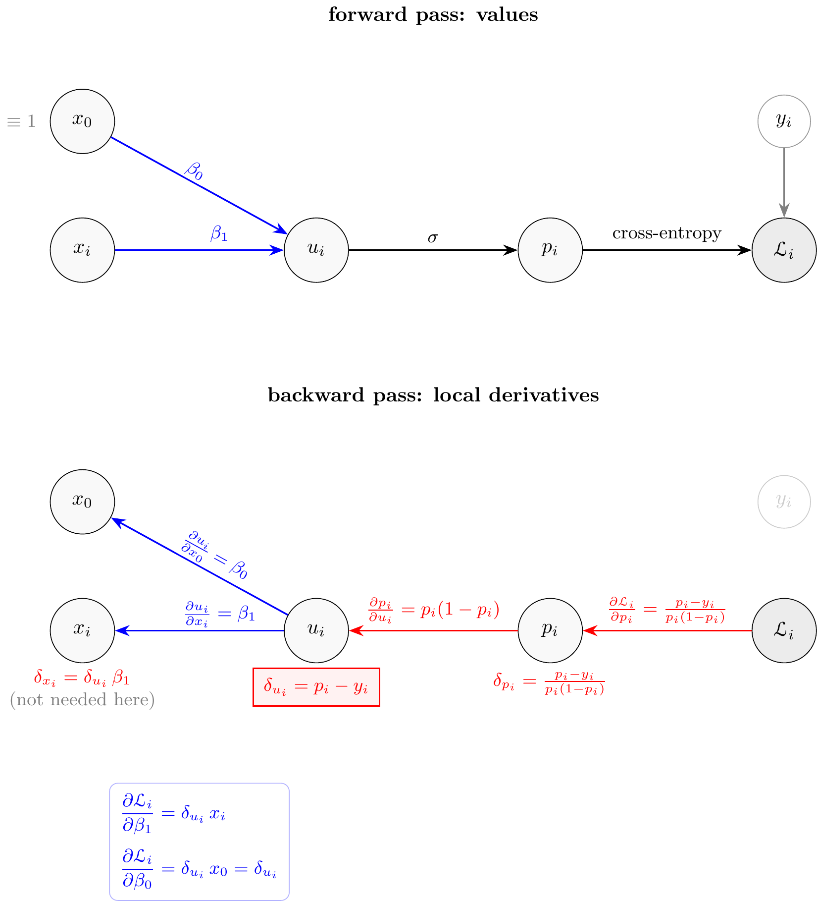
Figure 5.16: Shows how the gradient of the negative log-likelihood is assembled by the chain rule, by drawing logistic regression as the one-unit neural network it is. Logistic regression as a one-unit network: the forward pass (top) maps inputs to a linear unit, a sigmoid and a loss; the backward pass (bottom) multiplies the local derivatives, and the sigmoid factor cancels so that the signal reaching the linear unit is the prediction error \(p_i - y_i\). As in the two-layer picture, each arrow carries only the local derivative of its head with respect to its tail, the sensitivity \(\delta\) of each node sits beneath that node, and the parameter gradients are collected in the box beneath the fan of weight arrows.
The red box marks the cancellation: whatever the sigmoid contributes on the way forward is undone on the way back, leaving \(\delta_i = p_i - y_i\). In a deeper network the same \(\delta\) would be passed further left and multiplied by the next layer’s local derivative; here there is only one layer, so the recursion stops immediately and \(g(\beta) = \sum_i \delta_i\,(1, x_i)^{\top}\).
5.3.5.4 Implementation
Code
### numerically stable log(1 + exp(u))log1pexp <-function(u) pmax(u, 0) +log1p(exp(-abs(u)))### negative log-likelihood, its gradient g, and the information matrixnll_grad_info <-function(b, y, x) { u <- b[1] + b[2] * x p <-plogis(u) w <- p * (1- p)list(neg_loglik =-sum(u * y -log1pexp(u)),grad =-c(sum(y - p), sum(x * (y - p))), # g(beta)inf =matrix(c(sum(w), sum(x * w),sum(x * w), sum(x * x * w)), 2, 2) )}neg_logp_logistic <-function(b, x, y) { u <- b[1] + b[2] * x-sum(u * y -log1pexp(u))}
Because we minimise the negative log-likelihood, the update \(\beta^{(k+1)} = \beta^{(k)} + J^{-1}S\) becomes \(\beta^{(k+1)} = \beta^{(k)} - J^{-1} g(\beta^{(k)})\), which is the form coded below.
Code
mle_logistic_nr <-function(b0, no_iter, y, x, debug =FALSE) { out <-matrix(NA_real_, no_iter +1, 3,dimnames =list(NULL, c("beta0", "beta1", "neg_loglike"))) b <- b0for (i inseq_len(no_iter +1)) { q <-nll_grad_info(b, y, x) out[i, ] <-c(b, q$neg_loglik)if (debug) print(out[i, ])if (i > no_iter) break step <-tryCatch(solve(q$inf, q$grad),error =function(e) rep(NA_real_, 2))if (any(!is.finite(step))) break b <- b - step } out}
Code
gen_logistic_data <-function(b, n) { x <-sort(runif(n, -2, 2)) p <-plogis(b[1] + b[2] * x) y <-rbinom(n, 1, p)plot(x, p, type ="l", ylim =c(0, 1), ylab ="P(y = 1)")points(x, y, col = y +1)list(x = x, y = y)}set.seed(1)data <-gen_logistic_data(c(0, 1.5), 200)
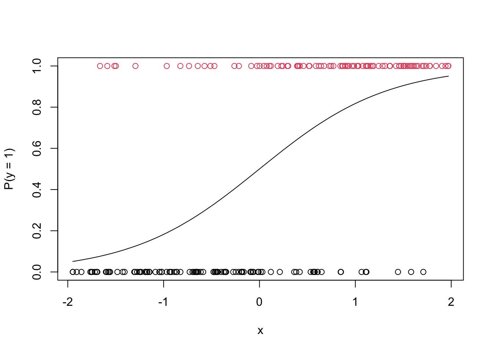
Figure 5.17: Shows the simulated logistic-regression data used as a running example for multivariate optimization. Simulated logistic data: true success probability and observed responses.
A start close to the truth converges in a handful of iterations:
sqrt(diag(solve(logit_nlm$hessian))) # asymptotic standard errors
[1] 0.1797390 0.2089674
Code
summary(glm(y ~ x, family =binomial(), data = data))$coefficients
Estimate Std. Error z value Pr(>|z|)
(Intercept) -0.2725322 0.1797371 -1.516283 1.294479e-01
x 1.5034244 0.2089473 7.195234 6.235374e-13
The three routes agree to printing accuracy. glm is doing the same arithmetic as mle_logistic_nr: for a GLM the Newton–Raphson step can be rearranged as a weighted least-squares fit of the working response \(u_i + (y_i - p_i)/\{p_i(1-p_i)\}\) on \(X\) with weights \(p_i(1-p_i)\), giving iteratively reweighted least squares (IRLS). This is not a different algorithm but a different arrangement of the same one, and it explains why glm reports “Fisher Scoring iterations” in its output.
5.3.6 Enhancements to Multivariate Newton-Raphson Methods
Newton–Raphson can diverge even on a well-behaved problem. Far from \(\hat\theta\) the quadratic approximation is unreliable, and \(J_k = J(\theta^{(k)})\) may be nearly singular or not positive definite, so the raw step \(\delta^{(k)} = -J_k^{-1}g_k\), with \(g_k = g(\theta^{(k)})\), can be enormous or fail to point downhill at all. The standard enhancements all keep the Newton idea and add a guard.
Step halving (line search). Move \(\theta^{(k+1)} = \theta^{(k)} + s\,\delta^{(k)}\), starting at \(s = 1\) and halving until \(\mathcal{L}\) decreases by enough — the Armijo condition\(\mathcal{L}(\theta^{(k)} + s\,\delta^{(k)}) \le \mathcal{L}(\theta^{(k)}) + c_1 s\,g_k^\top\delta^{(k)}\) with a tiny \(c_1\) (say \(10^{-4}\)). Near the minimum \(s = 1\) passes on the first try, so fast local convergence is untouched.
The condition asks for more than a lower value of \(\mathcal{L}\). Written as \[
\underbrace{\mathcal{L}(\theta^{(k)} + s\,\delta^{(k)}) - \mathcal{L}(\theta^{(k)})}_{\text{actual decrease}}
\;\le\; c_1 \cdot \underbrace{s\,g_k^\top\delta^{(k)}}_{\text{decrease predicted by the tangent plane}},
\] it says that the decrease must be at least a fixed fraction of what the slope promises for a step of that length. (When \(J_k\) is positive definite, \(g_k^\top\delta^{(k)} = -g_k^\top J_k^{-1} g_k < 0\), so the right-hand side is a genuine decrease.) Asking only for some decrease is not enough, because the gains can shrink so fast that the iterates stall at a point that is not a minimum. For \(\mathcal{L}(\theta) = \theta^2\), the sequence \(\theta^{(k)} = (-1)^k(1 + 2^{-k})\) lowers \(\mathcal{L}\) at every step and moves downhill each time, yet it bounces towards \(\pm 1\), where the gradient is \(\pm 2\), never \(0\). With \(\delta = -g = -2\theta\) the Armijo condition reduces to \(s \le 1 - c_1\), and the overshooting steps need \(s \to 1\), so they are rejected. Armijo only forbids steps that are too long for the gain they deliver. Starting at \(s = 1\) and halving only when the test fails is what keeps the accepted steps from being needlessly short.
Ridging (Levenberg–Marquardt). Replace \(J_k\) by \(J_k + \tau\mathbb{I}\), with \(\tau \ge 0\) just large enough to make it positive definite. This repairs indefiniteness and shortens the step; as \(\tau\) grows the direction rotates from Newton toward plain gradient descent, and \(\tau = 0\) wherever \(J_k\) is already well behaved. This is roughly what nlm does internally.
A simple rule takes \(\tau = \max\{0,\ \epsilon - \lambda_{\min}(J_k)\}\), which lifts the smallest eigenvalue of \(J_k\) to a small positive \(\epsilon\). A modified Cholesky factorisation achieves the same without an eigendecomposition. Since \(\delta^{(k)}(\tau) = -(J_k + \tau\mathbb{I})^{-1}g_k\) has length decreasing in \(\tau\), ridging also acts as a step-length control, and with a positive definite matrix the direction satisfies \(g_k^\top\delta^{(k)} < 0\), so a line search along it is guaranteed to find a decrease. A related guard for GLMs is Fisher scoring: the expected information \(I(\theta) = X^\top W X\) is positive semi-definite at every \(\theta\), and positive definite whenever \(X\) has full column rank and all weights are positive, so the ridge is rarely needed at all.
Trust regions. Minimise the quadratic approximation only within \(\lVert\theta - \theta^{(k)}\rVert \le \Delta_k\), growing or shrinking \(\Delta_k\) according to how well the quadratic predicted the realised change. This is nlminb and the PORT routines.
The quality of the prediction is measured by the ratio \[
\rho_k = \frac{\mathcal{L}(\theta^{(k)} + \delta) - \mathcal{L}(\theta^{(k)})}
{g_k^\top\delta + \tfrac12\,\delta^\top J_k\,\delta},
\] actual decrease over the decrease predicted by the quadratic model. A typical rule rejects the step if \(\rho_k\) is small or negative and shrinks \(\Delta_k\) (say by a factor of four); it accepts the step and keeps \(\Delta_k\) when \(\rho_k\) is moderate; and it doubles \(\Delta_k\) when \(\rho_k \ge 3/4\) and the step reached the boundary. The constrained subproblem has the solution \(\delta = -(J_k + \tau\mathbb{I})^{-1}g_k\) for some \(\tau \ge 0\), so a trust region is ridging with \(\tau\) chosen by the step length rather than the other way round. Unlike a line search, it first fixes how far to go and then chooses the direction. That makes it robust when \(J_k\) is indefinite: at a saddle point, where the Newton step points the wrong way, it still moves downhill.
Better parameterisation and starting values. Often the cheapest fix. Centring and scaling the covariates improves the conditioning of \(J\). Parameters with natural bounds are better optimised on an unconstrained scale — \(\log\sigma\) rather than \(\sigma\), \(\operatorname{logit} p\) rather than \(p\) — which removes steps that leave the parameter space and usually makes \(\ell\) closer to quadratic. Good starting values come from a simpler fit: method of moments estimates, a least-squares fit, or the null model with an intercept only. glm sidesteps the choice altogether: it starts from fitted means rather than coefficients, taking \(\mu_i^{(0)} = (y_i + 0.5)/2\) for binary data, which are always inside \((0, 1)\), and it therefore never begins in the flat region where the weights \(p_i(1-p_i)\) vanish.
Combining the first two gives safeguarded Newton: at each iteration form a positive definite \(\tilde J_k\), solve \(\tilde J_k\,\delta^{(k)} = -g_k\), then backtrack on \(s\). Both guards switch themselves off near a well-behaved maximum, so the method keeps Newton’s fast local convergence while still making progress from remote starting values.
5.3.6.1 Shinylive App for Safeguarded Newton-Raphson
There is a shinylive app to show how the full Newton-Raphson step diverges on a logistic-regression likelihood started far from the maximum, and how backtracking on the step length rescues the same starting value.
5.4 Example: Poisson Regression with Neural Networks
Logistic regression was a one-unit network, and its Hessian was small enough to invert. Adding a single hidden layer breaks that comfort, and shows why the methods in this section exist.
Let each observation carry \(p = 3\) covariates \(x_i = (x_{i1}, x_{i2}, x_{i3})\) and a count response \(y_i\). Put \(J = 3\) hidden units \(h_{i1}, h_{i2}, h_{i3}\) between the covariates and the mean, and use a log link so that the mean stays positive: \[a_{ij} = \sum_{k=0}^{p} w_{jk}\, x_{ik}, \qquad h_{ij} = \tanh(a_{ij}), \qquad \eta_i = \sum_{j=0}^{J} v_j\, h_{ij}, \qquad \lambda_i = e^{\eta_i},\] where \(x_{i0} \equiv 1\) and \(h_{i0} \equiv 1\) are constant inputs, so that the intercept of each hidden unit is the weight \(w_{j0}\) and the intercept of the linear predictor is the weight \(v_0\), with \(y_i \mid x_i \sim \mathrm{Poisson}(\lambda_i)\). Dropping the \(\log y_i!\) term, which carries no parameters, the negative log-likelihood is \[\mathcal{L}(\theta) = \sum_{i=1}^{n} \mathcal{L}_i(\theta), \qquad \mathcal{L}_i(\theta) = \lambda_i - y_i \eta_i ,\] where \(\theta\) collects the \(J(p+1) = 12\) input weights \(w_{jk}\), \(k = 0, \ldots, p\), and the \(J + 1 = 4\) output weights \(v_j\), \(j = 0, \ldots, J\) — sixteen parameters in all.
The intercepts matter: without \(w_{j0}\) every hidden unit would pass through the origin, and without \(v_0\) the level of \(\lambda\) could not be shifted freely. Carrying them as ordinary weights on constant inputs means they need no separate symbol and no separate rule: \(w_{j0}\) and \(v_0\) are differentiated exactly like every other weight, and their local derivative happens to be the tail value \(1\).
Three features make this a natural home for gradient-only methods. The score equations have no closed-form solution. \(\mathcal{L}\) is not convex — permuting the hidden units leaves it unchanged, so every minimum is one of \(J!\) equivalent copies, and the Hessian is indefinite over much of the space, which is exactly where a raw Newton step misbehaves. And while a \(12 \times 12\) Hessian is still cheap here, its size grows as \((Jp + J)^2\): widen the layer or the covariate set and the \(O(p^3)\) solve becomes the bottleneck long before the gradient does.
5.4.1 What the model can represent
With a single covariate the model is easy to see. Each tanh unit switches on at a location set by its intercept \(w_{j0}\) and at a rate set by its weight \(w_{j1}\), and enters the linear predictor scaled by its output weight \(v_j\). It is those scaled units \(v_j h_j(x)\) that are worth plotting: they add up, with \(v_0\), to \(\eta(x)\), and exponentiating \(\eta\) gives a \(\lambda(x)\) with a hump — a shape a log-linear Poisson regression, whose \(\log\lambda\) is a straight line, cannot produce at all.
Code
set.seed(7)w_true <-c(3.0, 3.0, 1.0) # input weight of each hidden unitw0_true <-c(1.5, -1.5, 0.0) # hidden intercepts: where each unit switches onv_true <-c(1.2, -1.2, 0.3) # output weightsv0_true <--0.3# output interceptlambda_nn <-function(x, w, w0, v, v0)as.vector(exp(v0 +tanh(sweep(outer(x, w), 2, w0, "+")) %*% v))xg <-seq(-3, 3, length.out =400)H <-tanh(sweep(outer(xg, w_true), 2, w0_true, "+"))VH <-sweep(H, 2, v_true, "*") # the scaled units v_j h_j(x)eg <- v0_true +rowSums(VH) # eta(x), what they add up topar(mfrow =c(1, 2), mar =c(4, 4.5, 2.5, 1))matplot(xg, VH, type ="l", lty =1, lwd =2, col =c(1, 2, 4),ylim =range(VH, eg) +c(0, 1.3), # headroom for the legendxlab =TeX(r"($x$)"), ylab =TeX(r"($v_j h_j(x)$)"),main =TeX(r"(the three scaled hidden units)"))lines(xg, eg, lwd =2.5, lty =2, col ="grey30")abline(h =0, lty =3)legend("topleft", bty ="n", lty =c(1, 1, 1, 2), lwd =2,col =c(1, 2, 4, "grey30"), cex =0.8,legend =TeX(c(sprintf(r"($v_%d h_%d$: $w = %.1f$, $w_0 = %.1f$, $v = %.1f$)",1:3, 1:3, w_true, w0_true, v_true), r"($\eta(x) = v_0 + \sum_j v_j h_j(x)$)")))## simulate counts from the curven <-150xi <-runif(n, -3, 3)yi <-rpois(n, lambda_nn(xi, w_true, w0_true, v_true, v0_true))plot(xg, lambda_nn(xg, w_true, w0_true, v_true, v0_true), type ="l", lwd =2,ylim =c(0, max(yi) +0.5),xlab =TeX(r"($x$)"), ylab =TeX(r"($\lambda(x)$ and $y$)"),main =TeX(r"(mean curve and simulated counts)"))points(xi, yi, pch =19, col =adjustcolor(2, 0.45), cex =0.7)legend("topright", bty ="n", lwd =c(2, NA), pch =c(NA, 19), col =c(1, adjustcolor(2, 0.6)),legend =TeX(c(r"($\lambda(x)$)", r"($y_i \sim Poisson(\lambda(x_i))$)")))
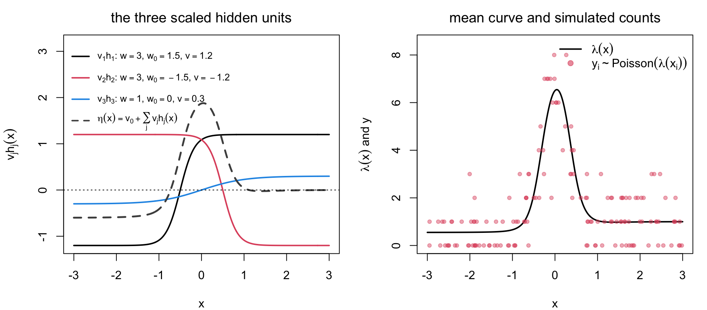
Figure 5.18: Shows what a hidden layer buys in a Poisson regression, by displaying the three scaled hidden units and the non-monotone mean curve they combine into, together with counts simulated from it. A one-covariate Poisson network with three tanh units: the scaled activations \(v_j h_j(x)\) and the linear predictor \(\eta(x)\) they sum to (left), and the resulting mean \(\lambda(x) = e^{\eta(x)}\) with simulated counts (right), a shape no log-linear model could produce.
The counts scatter around the curve with variance equal to the mean, so they bunch near zero in the flat regions and spread out under the peak.
5.4.2 The gradient by backpropagation
The chain rule applies exactly as in the logistic case, only with one more layer to traverse. Working backwards from the loss for a single observation:
Loss to the linear predictor. The two local derivatives at the output are \[\frac{\partial \mathcal{L}_i}{\partial \lambda_i} = 1 - \frac{y_i}{\lambda_i}, \qquad \frac{\partial \lambda_i}{\partial \eta_i} = \lambda_i ,\] whose product is again a bare prediction error, with the \(\lambda_i\) cancelling just as \(p_i(1-p_i)\) did for the sigmoid: \[\delta_i \;=\; \frac{\partial \mathcal{L}_i}{\partial \eta_i} = \left(1 - \frac{y_i}{\lambda_i}\right)\lambda_i = \lambda_i - y_i .\]
Into the hidden layer. The path from \(a_{ij}\) to the loss runs through \(h_{ij}\) and then \(\eta_i\), contributing \(\partial \eta_i/\partial h_{ij} = v_j\) and \(\partial h_{ij}/\partial a_{ij} = 1 - h_{ij}^2\) (the tanh derivative). Taking them one at a time gives a sensitivity at each node on the way, \[\delta_{ij}^{h} \;=\; \frac{\partial \mathcal{L}_i}{\partial h_{ij}} = \delta_i\, v_j , \qquad \delta_{ij}^{a} \;=\; \frac{\partial \mathcal{L}_i}{\partial a_{ij}} = \delta_{ij}^{h}\left(1 - h_{ij}^{2}\right) .\]
Input layer. Finally \(\partial a_{ij}/\partial w_{jk} = x_{ik}\) for every \(k\), including \(\partial a_{ij}/\partial w_{j0} = x_{i0} = 1\), so \[\frac{\partial \mathcal{L}_i}{\partial w_{jk}} = \delta_{ij}^{a}\, x_{ik}, \qquad \frac{\partial \mathcal{L}_i}{\partial w_{j0}} = \delta_{ij}^{a} .\]
Each intercept derivative is the sensitivity at its own unit, unmultiplied. Splitting at \(a_{ij}\) is also what makes the computation efficient: \(\delta_{ij}^{a}\) is formed once and reused for all \(p\) weights entering unit \(j\).
5.4.3 Two kinds of arrow
Every arrow in the network is one of two kinds, and the distinction organises the whole computation.
Arrows that carry a weight, drawn blue below, are the ones forming a linear combination: \(x_{ik} \to a_{ij}\) carries \(w_{jk}\), the constant input \(x_{i0} \to a_{ij}\) carries \(w_{j0}\), \(h_{ij} \to \eta_i\) carries \(v_j\), and the constant hidden unit \(h_{i0} \to \eta_i\) carries \(v_0\). Every parameter of the model sits on one of these arrows, and these are the only derivatives we ultimately want.
Arrows that carry no weight are the fixed transformations: \(a_{ij} \to h_{ij}\) is tanh, \(\eta_i \to \lambda_i\) is \(\exp\), \(\lambda_i \to \mathcal{L}_i\) is the Poisson loss. Nothing is estimated on them, so they contribute no gradient component of their own; they only pass sensitivity along.
Backpropagation computes one number per node — the sensitivity of the loss to that node, \[\delta_z = \frac{\partial \mathcal{L}_i}{\partial z},\] obtained by multiplying the local derivatives along the arrows from the loss back to \(z\). Once \(\delta\) is known at a node, the edge rule of Section 5.3.5.2 makes the weights feeding it free:
The gradient of the weight on a blue arrow \(u \to z\) is \(\delta_z\) times the value at the arrow’s tail: . \[> \frac{\partial \mathcal{L}_i}{\partial \omega_{u \to z}} = \delta_z \cdot u . >.\]
The reason is immediate: \(z\) is a linear combination, so it depends on \(\omega\) only through the single term \(\omega\, u\), giving \(\partial z/\partial \omega = u\). For this network, with \(\delta_{\eta} = \lambda_i - y_i\), \(\delta_{h_j} = \delta_{\eta}\, v_j\) and \(\delta_{a_j} = \delta_{h_j}(1 - h_{ij}^2)\), \[\frac{\partial \mathcal{L}_i}{\partial v_j} = \delta_{\eta}\, h_{ij}, \qquad \frac{\partial \mathcal{L}_i}{\partial v_0} = \delta_{\eta} \cdot 1, \qquad \frac{\partial \mathcal{L}_i}{\partial w_{jk}} = \delta_{a_j}\, x_{ik}, \qquad \frac{\partial \mathcal{L}_i}{\partial w_{j0}} = \delta_{a_j} \cdot 1 .\]
The intercept gradients are the same expression with a tail value of \(1\), which is the whole content of “an intercept is a weight on a constant input”.
This also explains the one label that might look out of place. Along the blue arrow \(h_{ij} \to \eta_i\) the local derivative is \[\frac{\partial \eta_i}{\partial h_{ij}} = v_j ,\] and it plays no part in \(v_j\)’s own gradient — a weight’s gradient never involves that weight. Its job is to carry \(\delta\) from \(\eta_i\) back to \(h_{ij}\), so \(v_j\) appears in the gradient of every weight behind unit \(j\) and in none at or after it. In a deeper network this is the only kind of factor that accumulates: a path from the loss to an early weight is a long product of such node-to-node derivatives, closed off at the end by one tail value.
Summing over observations gives the full gradient \(g(\theta)\). This is backpropagation in miniature: one forward sweep stores \(h\), \(\eta\) and \(\lambda\); one backward sweep turns \(\delta_i\) into \(\delta_{ij}^{h}\), then \(\delta_{ij}^{a}\), reading off every partial derivative on the way. The cost is a small multiple of one function evaluation, no matter how many parameters there are — which is precisely why first-order methods scale where Newton does not.
The diagram below is the logistic picture with a layer inserted, and it is drawn twice: once for the forward pass and once for the backward pass, so that neither set of arrows has to share an edge with the other. The constant inputs appear as nodes of their own — \(x_0\) at the input layer and \(h_0\) at the hidden layer — drawn at the top of their layer so that the space below each layer stays free. Every parameter is then a \(w\) or a \(v\) sitting on an ordinary edge, the intercepts \(w_{j0}\) and \(v_0\) included.
The pre-activation \(a_j\) is drawn as a node of its own, so that every arrow joins two quantities that actually appear in the picture and the tanh step gets an edge to sit on. The backward panel traces one continuous path from the loss to a single weight, \(L \to \lambda \to \eta \to h_j \to a_j \to w_{jk}\), in bold. Multiplying the four local derivatives along it gives that weight’s partial derivative; every other weight is reached by a path of the same shape, drawn faint. Only the highlighted edges are labelled — the rest carry the same formulas with different indices.
Each arrow in the backward panel carries only its local derivative. The sensitivity \(\delta\) of each node is written directly beneath that node (including \(\delta_{x_k}\) at the input layer, which is well defined but never needed, since no parameter hangs off an input). The parameter gradients — each one a \(\delta\) at an arrow’s head times the value at its tail — are collected in the boxes beneath the fan of arrows whose weights they belong to.
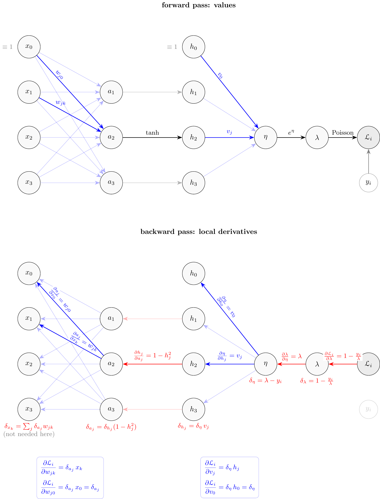
Figure 5.19: This figure shows the way that backpropagation assembles the gradient of a two-layer Poisson network, by labelling each edge with its local derivative. The network is oriented left-to-right, with the nodes of each layer stacked vertically: the forward pass (top) carries values rightward, and the backward pass (bottom) carries local derivatives leftward. Each arrow carries only the local derivative of its head with respect to its tail; the sensitivity \(\delta\) of each node sits directly beneath that node, and the parameter gradients — obtained by multiplying the \(\delta\) at the arrow’s head by the value at its tail — are collected in the boxes beneath the corresponding fan of weight arrows.
5.4.4 A General Description of Gradient of Neural Networks
Neither rule of Section 5.3.5.2 mentions depth, so the same pair describes a network of any size. Write a feed-forward network of \(L\) layers as \[h^{(0)} = x, \qquad a^{(l)} = W^{(l)} h^{(l-1)}, \qquad h^{(l)} = f\!\left(a^{(l)}\right), \qquad l = 1, \ldots, L ,\] with a constant entry folded into each \(h^{(l-1)}\) so that the intercepts are ordinary columns of \(W^{(l)}\), exactly as \(x_0\) and \(h_0\) are in Figure 5.19.
The backward pass has the same shape as the forward pass. Applying the node rule to a whole layer at once turns the sum over consumers into a matrix–vector product with the transposed weight matrix: \[\delta_{h^{(l-1)}} = W^{(l)\top} \delta_{a^{(l)}}, \qquad \delta_{a^{(l)}} = \delta_{h^{(l)}} \odot f'\!\left(a^{(l)}\right) ,\] where \(\odot\) is the elementwise product. Set the two sweeps side by side and they are the same two operations:
A layer of the backward pass takes a linear combination of the quantities in the layer just processed and then rescales each entry — the same two steps the forward pass performs on values. Three things differ. The matrix is transposed, so the linear combination runs across the arrows entering a unit rather than those leaving it. The elementwise step multiplies by \(f'(a^{(l)})\) instead of applying \(f\), which makes the backward pass linear in \(\delta\) once the activations are fixed. And the sweep runs from \(l = L\) down to \(l = 1\).
Starting the recursion. The sweep needs one number to begin with, the sensitivity at the output. For the Poisson network of this section that is \[\delta_{\eta_i} = \frac{\partial \mathcal{L}_i}{\partial \eta_i} = \lambda_i - y_i ,\] and for the logistic model of Section 5.3.5.2 it is \(p_i - y_i\). In both cases the derivative of the output activation cancels against the derivative of the loss, which is why the seed is a bare prediction error.
Reading off the gradients. Once \(\delta_{a^{(l)}}\) is known, the edge rule delivers the whole weight matrix at once as an outer product, \[\frac{\partial \mathcal{L}_i}{\partial W^{(l)}} = \delta_{a^{(l)}} \, h^{(l-1)\top} ,\] one entry \(\delta_{a^{(l)}_j} h^{(l-1)}_k\) per weight \(w^{(l)}_{jk}\): the sensitivity at the arrow’s head times the value at its tail. The label \(\delta_{x_k} = \sum_j \delta_{a_j} w_{jk}\) in Figure 5.19 is the node rule at \(l = 1\). It is marked unneeded there because no parameter hangs off an input, but in a deeper network it is precisely the \(\delta\) handed to the layer below.
The complete gradient for one observation is therefore four steps: sweep forward storing \(a^{(l)}\) and \(h^{(l)}\); seed \(\delta\) at the output; sweep backward through the pair of recursions above; and form one outer product per layer along the way. Summing over observations gives \(g(\theta)\).
Cost. The two sweeps consist of the same \(L\) matrix–vector products, one per layer, with the same matrices — \(W^{(l)}\) going up and \(W^{(l)\top}\) coming down. A gradient therefore costs a small constant multiple of one evaluation of \(\mathcal{L}_i\), about \(O(L W^{2})\) for width \(W\), or one multiply–add per parameter per sweep, independent of how many parameters there are. This is worth contrasting with the form in which the chain rule is usually written. Expanding \(\partial \mathcal{L}_i / \partial w\) as a sum over paths from the loss to \(w\) produces about \(W^{L}\) terms, exponential in depth. The recursion computes the same quantity by visiting each edge once: a node’s \(\delta\) is formed once and reused by every node that feeds it, so shared sub-paths are never recomputed. In the language of algorithms the graph is a DAG and the backward sweep is dynamic programming over it in reverse topological order, which stands to path enumeration as a memoized recursion stands to a naive one.
Memory. The backward sweep consumes what the forward sweep produced — \(h^{(l-1)}\) for the outer product, \(f'(a^{(l)})\) for the elementwise step — so the activations have to be stored, at a cost proportional to the total number of nodes. That is why the diagrams above have a forward panel at all, and it is the cost that gradient checkpointing trades back for recomputation in very deep models.
Two extensions. Weight sharing needs no new machinery: when one parameter sits on many edges, as in a convolutional or recurrent network, its gradient is the sum of the edge rule over all of them, which is the node rule again. And the direction of the sweep is a choice. Propagating \(\partial z / \partial \theta_k\)forward is equally correct but costs one sweep per parameter, whereas sweeping backward costs one sweep per output and there is a single scalar output here. That asymmetry is what makes a full gradient affordable for models with millions of parameters, and it is the property the rest of this chapter relies on.
Backpropagation is easy to get subtly wrong, so it is worth testing against finite differences before handing the gradient to an optimizer — the same comparison made for the univariate case earlier in this chapter.
Code
## pack/unpack the 16 parameters: W (J x p), w0 (J), v (J), v0 (1)J <-3nn_pois <-function(theta, X, y) { p <-ncol(X) W <-matrix(theta[1:(J * p)], J, p) w0 <- theta[J * p +1:J] v <- theta[J * p + J +1:J] v0 <- theta[J * p +2* J +1] A <-sweep(X %*%t(W), 2, w0, "+") # n x J linear units H <-tanh(A) # n x J activations eta <-as.vector(v0 + H %*% v) lam <-exp(eta) nll <-sum(lam - y * eta) # dropping log(y!) d <- lam - y # n dL/deta dv <-as.vector(t(H) %*% d) # J dL/dv_j dv0 <-sum(d) # 1 dL/dv_0 dh <-outer(d, v) * (1- H^2) # n x J dL/da_ij dW <-t(dh) %*% X # J x p dL/dw_jk dw0 <-colSums(dh) # J dL/dw_j0list(nll = nll, grad =c(as.vector(dW), dw0, dv, dv0))}set.seed(3)n <-40; p <-3X <-matrix(rnorm(n * p), n, p)theta0 <-rnorm(J * p +2* J +1, sd =0.5)## counts simulated from the network at theta0ytrue <-rpois(n, local({ W <-matrix(theta0[1:(J * p)], J, p); w0 <- theta0[J * p +1:J] v <- theta0[J * p + J +1:J]; v0 <- theta0[J * p +2* J +1]exp(v0 +tanh(sweep(X %*%t(W), 2, w0, "+")) %*% v)}))back <-nn_pois(theta0, X, ytrue)$grad## central differences, one coordinate at a timeh <-1e-6numeric_grad <-vapply(seq_along(theta0), function(k) { e <-numeric(length(theta0)); e[k] <- h (nn_pois(theta0 + e, X, ytrue)$nll -nn_pois(theta0 - e, X, ytrue)$nll) / (2* h)}, numeric(1))cbind(backprop = back, numeric = numeric_grad)[1:6, ]
max(abs(back - numeric_grad)) # agreement across all 16 coordinates
[1] 1.130205e-08
The two agree to the accuracy of the difference quotient. With a gradient this cheap and this reliable, BFGS or conjugate gradient can fit the model without ever forming a Hessian — which is what the rest of this section is about.
5.5 Gradient-Based Methods
Newton–Raphson is the method of choice when the second derivatives are available and \(p\) is modest. Outside that regime, three considerations push toward alternatives: derivatives may be unavailable or painful to code; the \(O(p^3)\) cost of solving the Newton system and the \(O(p^2)\) storage of \(J\) become prohibitive for large \(p\); and the objective may be non-smooth, noisy or multimodal.
As everywhere in this chapter, the objective is the negative log-likelihood \(\mathcal{L}(\theta) = -\ell(\theta)\), whose minimum is exactly the maximum of \(\ell\). This is also the convention that R’s optim(), nlm(), and nlminb() use internally, so the code below matches what those functions do under the hood. The methods here apply to any smooth objective, not only a likelihood, so this section writes \(f\) for the function being minimized and keeps \(g = \nabla f\) for its gradient — the same \(g\) used everywhere else in the chapter, where \(f = \mathcal{L}\) and \(g = \mathcal{L}'(\theta)\) in the univariate case.
5.5.1 Classification by derivative information
Methods are most usefully organised by what they require of the objective.
Table 5.2: Organizes the optimization methods of this chapter by how much derivative information each one requires. Optimization methods classified by the derivative information required
The workhorse class; large \(p\); gradients cheap by automatic differentiation
2
Gradient and Hessian
Newton–Raphson, Fisher scoring, IRLS, trust-region Newton
Statistical models of modest dimension where the Hessian is also wanted for inference
5.5.2 Steepest Descent with Line Search
Move along \(-g(\theta_k)\), the direction of steepest descent, choosing the distance by a one-dimensional search: \[
\theta_{k+1} = \theta_k - \alpha_k\, g(\theta_k), \qquad
\alpha_k = \arg\min_{\alpha > 0} f\!\left(\theta_k - \alpha\, g(\theta_k)\right) .
\]
Writing \(g_k\) for \(g(\theta_k)\), the step is simply \(\theta_{k+1} = \theta_k - \alpha_k g_k\): the search direction is the negative gradient, so it needs no name of its own.
The step length \(\alpha_k\) can come from an exact line search — a univariate minimization by golden section or optimize() along the ray — or an inexact one: start at \(\alpha = 1\) and halve until the Armijo sufficient-decrease condition \(f(\theta_k - \alpha g_k) \le f(\theta_k) - c\,\alpha\,g_k'g_k\) holds. This is conceptually the simplest gradient method, and the one that best illustrates the role of a line search, but its convergence is only linear, and the rate deteriorates with the condition number of the Hessian: on an elongated valley the iterates zig-zag across it rather than travelling along it, as the next figure shows. It is rarely used unmodified.
Code
grad_descent <-function(f, g, x0, maxit =1000, tol =1e-8) { path <- x0for (k in1:maxit) { gk <-g(x0) a <-optimize(function(a) f(x0 - a * gk), c(0, 10))$minimum # exact line search x1 <- x0 - a * gk; path <-rbind(path, x1)if (sqrt(sum((x1 - x0)^2)) < tol) break x0 <- x1 }list(par = x1, iter = k, path = path)}
5.5.3 Why Gradient Descent Zig-Zags
With an exact line search, consecutive gradients are orthogonal — \(g_{k+1}'g_k = 0\), since the search stops exactly where the directional derivative along \(-g_k\) vanishes. On the elongated contours of the quadratic from Figure 5.15, that orthogonality forces the path to zig-zag back and forth across the valley instead of running down its length:
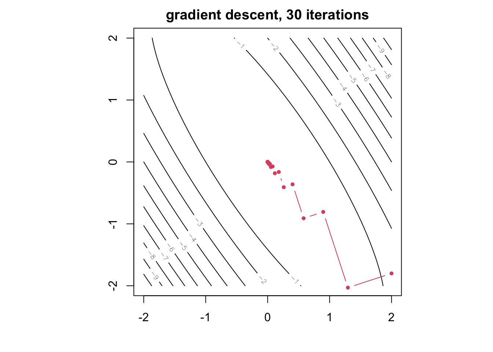
Figure 5.20: Illustrates the main weakness of gradient descent: on an elongated objective it makes slow zig-zag progress. Gradient descent with an exact line search zig-zags across an elongated valley: each step is orthogonal to the next.
The number of iterations needed grows with the condition number\(\lambda_{\max}/\lambda_{\min}\) of the Hessian — precisely the elongation of the ellipses in the earlier figure.
5.5.4 Conjugate Gradient
The zig-zag is fixed by choosing each new direction to be conjugate to the previous ones with respect to the Hessian \(Q\): \(d_i'Qd_j = 0\) for \(i \ne j\). For a quadratic \(f(\theta) = \tfrac12\theta'Q\theta - b'\theta\), minimizing along \(p\) such directions in succession reaches the exact minimum in at most \(p\) steps, without ever forming or storing \(Q\) — storage is \(O(p)\), its defining advantage over Newton.
Here a separate symbol is warranted: the search direction \(d_k\) is no longer the negative gradient, but a correction of it. The nonlinear version builds these directions from gradients only: \[
d_0 = -g_0, \qquad d_{k+1} = -g_{k+1} + \beta_k d_k,
\]\[
\beta_k^{\mathrm{FR}} = \frac{g_{k+1}'g_{k+1}}{g_k'g_k}\ \text{(Fletcher–Reeves)}, \qquad
\beta_k^{\mathrm{PR}} = \frac{g_{k+1}'(g_{k+1} - g_k)}{g_k'g_k}\ \text{(Polak–Ribière)},
\] with \(\theta_{k+1} = \theta_k + \alpha_k d_k\) from a line search and \(g_k = g(\theta_k)\) as before. Fletcher–Reeves and Polak–Ribière differ only in this correction coefficient. The method is sensitive to the accuracy of the line search, and conjugacy degrades on non-quadratic \(f\), so it is usually restarted with \(d = -g\) every \(p\) iterations.
Code
conj_grad <-function(f, g, x0, maxit =1000, tol =1e-8, restart =length(x0)) { g0 <-g(x0); d <--g0; path <- x0 # d: a conjugate direction, not -gfor (k in1:maxit) { a <-optimize(function(a) f(x0 + a * d), c(0, 10))$minimum x1 <- x0 + a * d; g1 <-g(x1); path <-rbind(path, x1)if (sqrt(sum(g1^2)) < tol) break beta <-if (k %% restart ==0) 0elsemax(0, sum(g1 * (g1 - g0)) /sum(g0^2)) # Polak-Ribiere+ d <--g1 + beta * d; x0 <- x1; g0 <- g1 }list(par = x1, iter = k, path = path)}cg <-conj_grad(fq, gq, c(2, -1.8))par(pty ="s", mar =c(4, 4, 2, 1))contour(s, s, -z, nlevels =15, main =sprintf("conjugate gradient, %d iterations", cg$iter))lines(gd$path, type ="b", col =2, pch =19, cex =0.6); lines(cg$path, type ="b", col =4, pch =19, lwd =2)legend("topleft", c("gradient descent", "conjugate gradient"), col =c(2, 4), lwd =2, bty ="n")
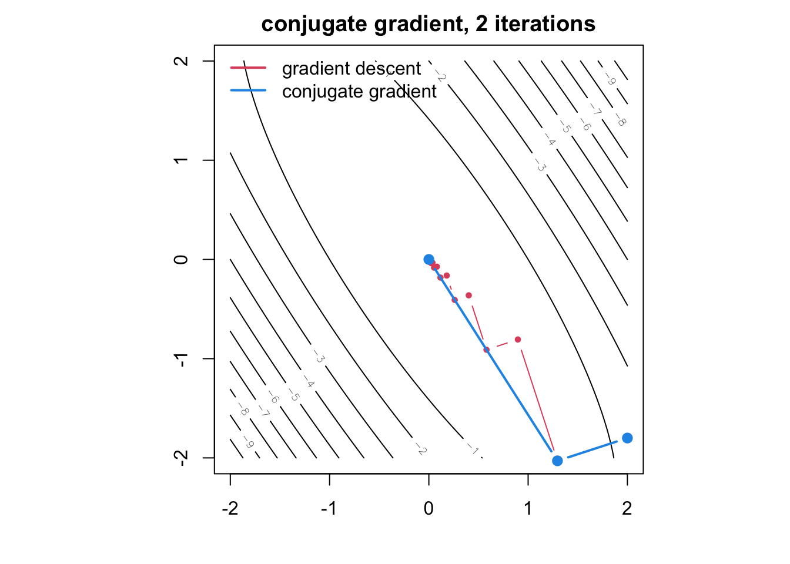
Figure 5.21: Shows how conjugate gradient repairs the zig-zag behaviour of gradient descent by choosing search directions that do not undo earlier progress. Conjugate gradient (blue) reaches the minimum of the same elongated quadratic in far fewer iterations than gradient descent (red).
5.5.5 Quasi-Newton: BFGS
BFGS sits between the gradient methods above and Newton’s method: it builds an approximation \(B_k \approx J(\theta_k)\) from successive gradient differences \(s_k = \theta_{k+1} - \theta_k\), \(y_k = g_{k+1} - g_k\), via a rank-two update that keeps \(B_k\) positive definite by construction (which is exactly why the Wolfe curvature condition of an earlier section matters: it is what guarantees \(s_k'y_k > 0\), and hence a well-defined update). Steps are \(\theta_{k+1} = \theta_k - \alpha_k B_k^{-1} g_k\) with a line search, giving superlinear convergence from only first derivatives — again a rescaling of \(g_k\) rather than \(g_k\) itself. BFGS itself stores a full \(p \times p\) approximation; L-BFGS keeps only the last few update vectors, reducing storage to \(O(mp)\) and making it the default choice for high-dimensional smooth problems. For most likelihood problems where the Hessian is awkward to derive, BFGS with an analytic gradient is the best practical compromise.
Returning to the logistic-regression example, optim() can fit it with no Hessian at all — Nelder–Mead needs only the log-likelihood, CG and BFGS also take the analytic gradient already coded for Newton–Raphson:
sqrt(diag(solve(fits$BFGS$hessian))) # SEs from the numerically computed Hessian at the optimum
[1] 0.1797399 0.2089537
All three land on the same estimate as mle_logistic_nr and glm above, and optim(..., hessian = TRUE) returns a finite-difference Hessian at the solution, so standard errors are available even for a method that never formed one during the iterations.
5.5.6 Shinylive App for Comparing the Optimizers
There is a shinylive app to let you compare the paths that gradient descent, conjugate gradient, BFGS and safeguarded Newton take on the same objective, to see how curvature information affects speed and stability.
5.6 Stochastic Gradient Descent
5.6.1 Motivation: Large \(n\)
For iid data the negative log-likelihood and its gradient are sums over observations: \[
\mathcal{L}(\theta) = \sum_{i=1}^n \mathcal{L}_i(\theta), \qquad g(\theta) = \sum_{i=1}^n g_i(\theta).
\]
Every derivative-based method above needs the full gradient — an \(O(np)\) pass through all the data — at every single iteration, and Newton needs \(O(np^2)\) for the Hessian on top of that. With \(n\) in the millions and \(p\) in the millions, as in a large neural network, even one full gradient evaluation is expensive.
The idea behind stochastic gradient descent is that \(g_i(\theta)\) for a randomly chosen \(i\) is an unbiased estimate of the average gradient, \[
E_i\big[g_i(\theta)\big] = \frac{1}{n}g(\theta),
\] so a noisy but cheap gradient estimate is often enough to make progress — the same Monte Carlo idea used elsewhere in this book, now applied to optimization rather than integration.
5.6.2 The SGD Algorithm
For \(t = 1, 2, \ldots\):
Sample an index \(i_t\) uniformly from \(\{1, \ldots, n\}\) — or shuffle the data once and cycle through it, so that one full pass is called an epoch.
Update in the descent direction of that single observation’s negative log-likelihood: \[
\theta_{t+1} = \theta_t - \gamma_t\,g_{i_t}(\theta_t).
\]
Mini-batch SGD averages the gradient over a batch \(B_t\) of \(m\) observations (typically \(m = 32\)–\(512\) in machine-learning practice, though far smaller batches suffice for the simple models in this book): \[
\theta_{t+1} = \theta_t - \gamma_t\,\frac{1}{m}\sum_{i\in B_t}g_i(\theta_t),
\] which reduces the variance of the gradient estimate by a factor of \(1/m\) at \(m\) times the per-step cost, and is what lets the computation vectorize efficiently or run on a GPU. The learning rate\(\gamma_t\) plays the role that a line search played for the deterministic methods above — a line search itself would need a full pass over the data to evaluate \(\mathcal{L}\), defeating the purpose.
5.6.3 Learning Rate and Convergence
Because each update uses a noisy gradient, a constant learning rate \(\gamma\) makes \(\theta_t\)bounce around the optimum indefinitely, with a variance proportional to \(\gamma\). The classical result of Robbins and Monro (1951) is that \(\theta_t\) converges to the optimum provided \[
\sum_t \gamma_t = \infty \quad\text{and}\quad \sum_t \gamma_t^2 < \infty, \qquad\text{e.g. } \gamma_t = \frac{\gamma_0}{1 + t/t_0},
\] the first condition allowing the iterate to travel arbitrarily far from its start, and the second forcing the noise to die out fast enough for it to settle.
A learning rate that is too large causes divergence or persistent noise; one that is too small is painfully slow. Convergence is only sublinear — far slower than Newton’s quadratic rate per iteration — but each SGD iteration costs \(O(p)\) or \(O(mp)\) rather than \(O(np)\) for a full gradient or \(O(np^2)\) for a Hessian, and early progress is often fast even when final convergence is not. Common refinements include momentum (averaging past gradients to damp the noise), Adam (per-coordinate adaptive learning rates), and Polyak–Ruppert averaging of the iterates, \(\overline\theta_T = \tfrac1T\sum_{t\le T}\theta_t\), which restores the \(\sqrt n\)-efficiency of the MLE that the noisy path alone does not have.
5.6.4 Shinylive App for Stochastic Gradient Descent
There is a shinylive app to illustrate how stochastic gradient descent trades the accuracy of each step for lower cost, by comparing mini-batch with full-batch updates on the same problem.
5.6.5 Example: SGD for Logistic Regression in R
Returning one last time to the running logistic-regression example, mini-batch SGD needs only the per-observation gradient already coded for Newton–Raphson, applied to a small random subset at each update:
Code
sgd_logistic <-function(x, y, b0, gamma0 =0.5, t0 =100, epochs =30, batch =10) { n <-length(x); b <- b0; t <-0; path <- b0for (e in1:epochs) { idx <-sample(n)for (s inseq(1, n, by = batch)) { i <- idx[s:min(s + batch -1, n)] t <- t +1 u <- b[1] + b[2] * x[i] p <-plogis(u) grad <-c(sum(y[i] - p), sum(x[i] * (y[i] - p))) /length(i) b <- b + gamma0 / (1+ t / t0) * grad path <-rbind(path, b) } }list(est = b, path = path)}set.seed(2)beta_true <-c(0, 1.5) # the parameters used to simulate data$x, data$y abovesg <-sgd_logistic(data$x, data$y, c(0, 0))rbind(sgd = sg$est, nlm = logit_nlm$estimate, truth = beta_true)
nr_path <-mle_logistic_nr(c(0, 0), 8, data$y, data$x) # beta0, beta1, neg_loglike per Newton iterationm <-10; per_epoch <-length(data$x) / mxs <-0:(nrow(sg$path) -1)xn <- (0:(nrow(nr_path) -1)) * per_epochmatplot(xs, sg$path, type ="l", lty =1, col =c(2, 4),ylim =range(sg$path, nr_path[, 1:2]),xlab ="mini-batch updates (one epoch = one full pass through the data)",ylab ="coefficient",main =expression(paste("SGD vs. Newton-Raphson: ", beta[0], " (red), ", beta[1], " (blue)")))matlines(xn, nr_path[, 1:2], type ="b", lty =2, pch =19, col =c(2, 4), lwd =2)abline(h = logit_nlm$estimate, col =c(2, 4), lty =3)abline(v =seq(0, max(xs), per_epoch), col ="grey85")legend("right", c("SGD (mini-batch)", "Newton (per full pass)", "MLE"),lty =c(1, 2, 3), pch =c(NA, 19, NA), bty ="n", cex =0.85)
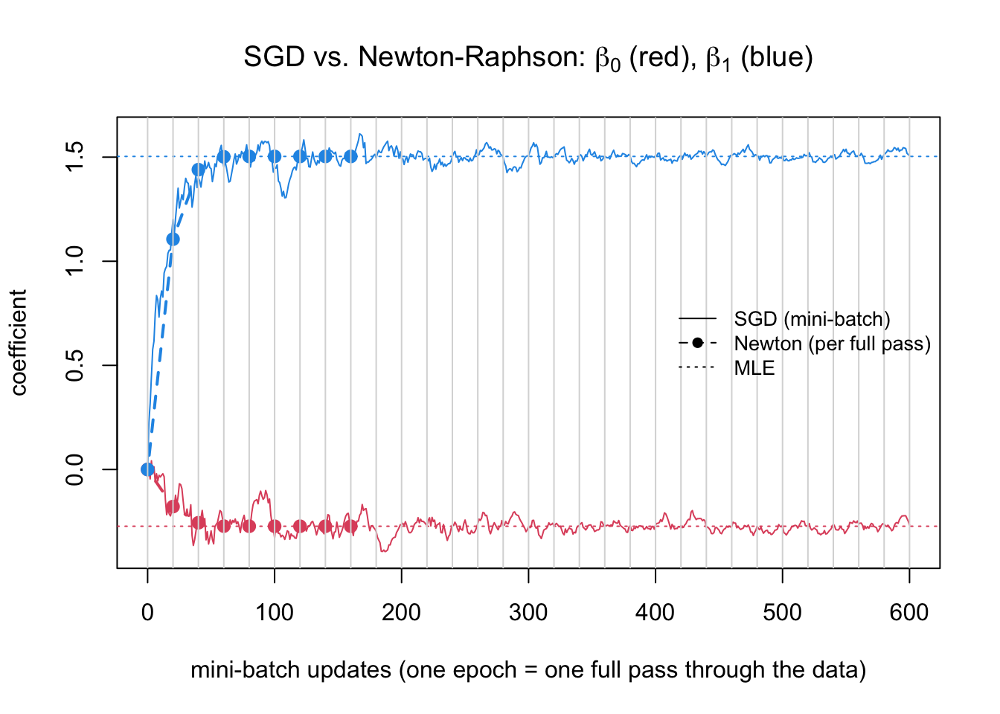
Figure 5.22: Compares stochastic gradient descent, which is cheap per step but noisy, with Newton-Raphson, which is expensive per step but takes large steps, on the same logistic regression problem. SGD (fine, noisy trajectory) versus Newton-Raphson (large steps, one per full pass through the data) converging to the same logistic-regression MLE.
Newton needs only a handful of full-data passes to converge on this small problem (\(n = 200\), \(p = 2\)); SGD makes many cheap updates and lands near the MLE with residual noise from its stochastic gradient. Per data pass, Newton is far more efficient here — its advantage narrows, and eventually reverses, only once a full gradient, or the \(O(p^3)\) Hessian solve, becomes too expensive to compute at every iteration, which is exactly the regime where SGD earns its keep.
5.7 Nelder–Mead (Simplex Method)
Nelder–Mead maintains a simplex of \(p+1\) points (a triangle in 2D) and moves it downhill using only function values, with no derivatives at all:
Order the vertices \(f(\theta_{(1)}) \le \cdots \le f(\theta_{(p+1)})\); let \(\overline\theta\) be the centroid of the best \(p\).
Reflect the worst vertex through \(\overline\theta\); if the reflected point is the new best, try expanding further.
If reflection is poor, contract toward \(\overline\theta\); if that also fails, shrink all vertices toward the best.
The method needs no derivatives and tolerates mild non-smoothness, but it converges slowly, degrades badly as \(p\) grows past roughly 10–20, and can stall at non-stationary points. It is optim’s default, which makes it by far the most-used — and most-overused — method in R: a reasonable first look at an unfamiliar objective, but a poor choice for a likelihood you will fit thousands of times.
5.7.1 Shinylive App for the Nelder–Mead Algorithm
There is a shinylive app to show how the Nelder-Mead method finds a minimum without derivatives, by repeatedly reflecting, expanding, contracting, and shrinking a simplex.
5.8 Comparing All the Methods
The chapter has covered a lot of ground, from bisection on a scalar gradient \(g\) to stochastic gradient descent on millions of parameters. The three tables below collect it into a single reference: which method needs what, which R function to reach for, and how to choose among them for a given problem.
5.8.1 Comparison
Table 5.3: Summarizes the trade-offs among the multivariate optimization methods of this chapter: what each needs, what it costs, and how fast and robust it is. Comparison of multivariate optimization methods. \(p\) is the number of parameters and \(m\) the L-BFGS memory length (typically 5–20).
Method
Derivatives
Storage
Cost per iteration
Local rate
Robust start
Hessian for SEs
Nelder–Mead
none
\(O(p^2)\)
\(O(p)\) evaluations
sublinear
good
no
Steepest descent
gradient
\(O(p)\)
1 gradient + line search
linear (slow)
good
no
Conjugate gradient
gradient
\(O(p)\)
1 gradient + line search
linear (fast)
moderate
no
BFGS
gradient
\(O(p^2)\)
1 gradient + \(O(p^2)\)
superlinear
moderate
approximate
L-BFGS
gradient
\(O(mp)\)
1 gradient + \(O(mp)\)
superlinear
moderate
no
Newton–Raphson
gradient, Hessian
\(O(p^2)\)
1 Hessian + \(O(p^3)\)
quadratic
poor
exact
Fisher scoring / IRLS
gradient, expected information
\(O(p^2)\)
1 weighted LS fit
near-quadratic
fair
exact
Stochastic gradient
minibatch gradient
\(O(p)\)
\(O(\text{batch})\)
sublinear
good
no
5.8.2 Implementations in R
Table 5.4: Maps the optimization methods to the R functions and packages that implement them. R interfaces to multivariate optimizers
Function
Package
Methods available
Notes
optim
stats
Nelder–Mead, BFGS, CG, L-BFGS-B, SANN
General workhorse; supply gr or the gradient is differenced; hessian = TRUE for inference; L-BFGS-B allows box constraints
nlm
stats
Newton-type with ridging
Uses analytic gradient/Hessian if attached as attributes, otherwise numerical; returns $hessian
nlminb
stats
Trust-region (PORT)
Reliable on badly scaled problems; supports box constraints
optimize, uniroot
stats
Golden section, Brent
One dimension only
glm
stats
IRLS (Fisher scoring)
The specialised case; use start when separation is suspected
nls
stats
Gauss–Newton, Golub–Pereyra
Nonlinear least squares; port algorithm adds constraints
optimx
optimx
Unified front end to a dozen optimizers
Useful for comparing methods on the same objective
nloptr
nloptr
Large NLopt collection, with constraints
Global and derivative-free options
Rsolnp, alabama
—
Nonlinear equality and inequality constraints
For genuinely constrained problems
5.8.3 Choosing a method
Table 5.5: Gives practical rules for choosing an optimizer according to the features of the problem. Practical guidance on method selection
Situation
Suggested approach
Hessian derivable, \(p\) small, standard errors wanted
Newton–Raphson or Fisher scoring
GLM or a model expressible as one
glm (IRLS)
Gradient available, \(p\) moderate
BFGS via optim(method = "BFGS")
Gradient available, \(p\) large
L-BFGS
Derivatives unavailable, \(p < 10\)
Nelder–Mead as a first pass, then refine
Objective noisy or non-smooth
Nelder–Mead or simulated annealing
Divergence or poor conditioning suspected
nlm or nlminb; rescale the parameters
Objective a sum over very many observations
Stochastic gradient descent and variants
Multiple local maxima suspected
Multiple random starts with any of the above
The last row deserves emphasis. Every method in this chapter is a local method: each converges to a stationary point near where it started, and none can certify that the point found is the global maximum. Restarting from a dispersed set of initial values and comparing the attained log-likelihoods is the only general safeguard, and it should be routine for any likelihood that is not known to be concave.